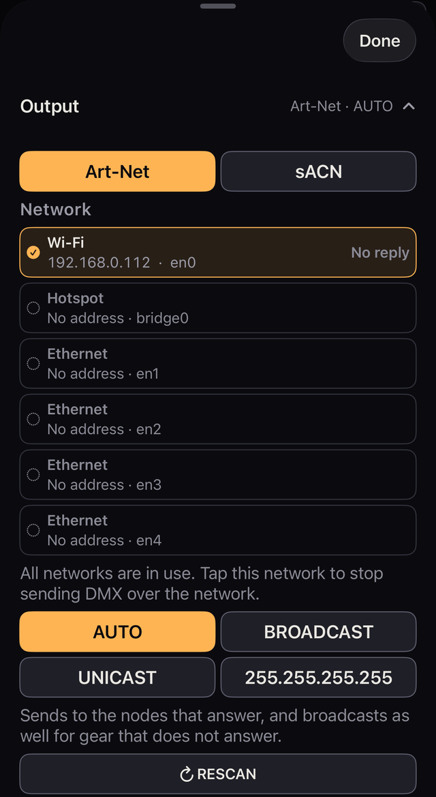
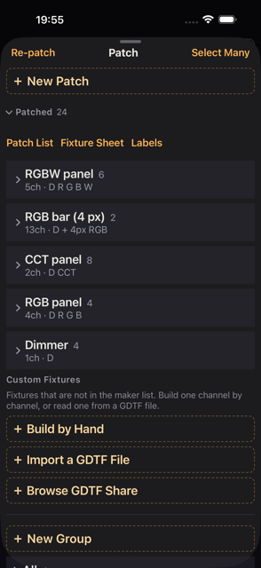
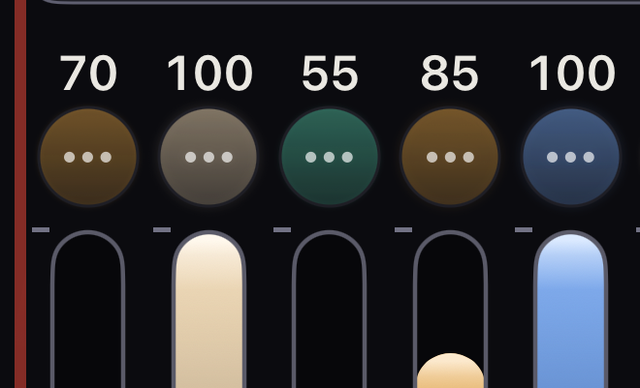
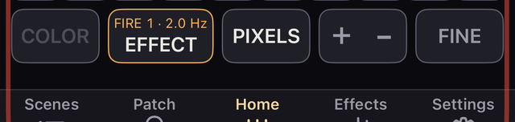
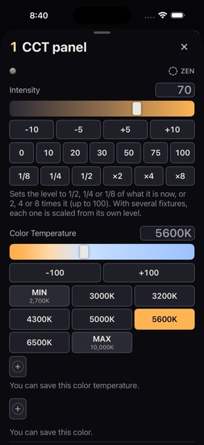
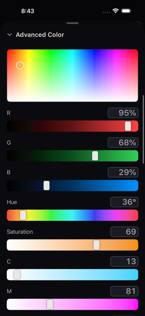
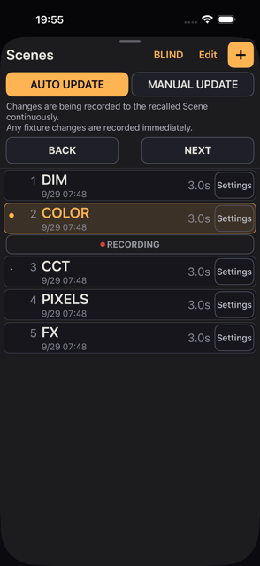

Film / TV lighting のための iPhone 照明コントロールアプリ。Art-Net / sACN / CRMX を使用して、Fixture、Color、Scene、Effects などを操作できます。
更新のお知らせ ・ 用語集 ・ Last updated 2026-10-31 ・ 0.2 build 349 で確認
版ごとの主な変更です。新しい版が上にあります。詳しくはそれぞれの章を読んでください。
灯体を 1 台も持っていなくても、ここまでは試せます。画面のボタン名は英語表記のまま載せています。
アプリを開くと、練習用の灯体 4 台があらかじめ登録された状態で始まります。3 分ほどで、Kanau の操作の要点が分かります。
GM(iPad では GM 100)を押し、開いたパネルで全体の明るさを下げます。画面上端(時計のある所)とふちが赤くなります。→100 を押して戻し、パネルを閉じます。フェーダーは、指を置いた位置ではなく、指を動かした量で変わります。どこを触り始めても結果は同じです。
Intensity で明るさを、カラーピッカーと R・G・B のバーで色を変えます。色温度を持つ灯体なら Color Temperature も出ます。灯体ごとに持っている機能が違うので、表示される項目も変わります。
Scenes タブを開きます。DIM COLOR PIXELS FX の 4 つが入っています。どれかを押してください。Play を押すと、下の行が BACK と NEXT に替わります。Home を見たまま Scene を進められます。EXIT でタブに戻ります。呼び出した後に明るさや色を変えると、その Scene が書き換わります(はじめの設定です)。書き換えたくないときは、08 章を読んでください。
画面左上の OUTPUT OFF を押すと、下に Slide to send の行が開きます。丸を右端までスライドすると送信が始まります(02 章)。そうすれば、灯体がなくても、Settings → DMX Monitor を開けば、Kanau が実際に送っている数値を確認できます。フェーダーを動かすと、その場で数字が変わります。
初回起動時のデモには、Generic の RGBW が 3 台と BAR(4 ピクセル)が 1 台、合計 4 台登録されています。3 つのグループがあり、KEY は RGBW が 2 台、BACK は RGBW が 1 台、FLOOR は BAR です。
GM は 100、RGBW の 1 台と BAR の、合わせて 2 台が BATTERY SAVE の対象で、番号の背景が緑です。FLOOR には炎のエフェクトが適用され、DIM／COLOR／PIXELS／FX の 4 つの Scene が保存されています。どれも、実在の製品ではありません。灯体がなくても画面の操作と DMX Monitor で値の変化を確認できます。
デモで操作が分かったら、自分の機材につなぎます。
Settings → Output で、Nodes Answering が 1 以上であることを確認します。OUTPUT OFF を押して、スライドして送信を始めます。Network Output に数字が出ます(02 章)。Patch → ＋ Fixtures → Add New Fixture で機種、DMX モード、ユニバース、アドレスを指定します。灯体本体の設定と合わせてください(03 章)。Scenes の SAVE で、そのときの明かりを Scene として保存します(08 章)。ポーリングに応答しない機材は、正常に受信していても Nodes Answering が 0 のままです。その場合は灯体の反応で判断してください。
練習用のデモは、中身が普通のショーと同じです。自分の灯体を登録するときは消してかまいませんし、Settings → Shows → New Show で新しいショーを作ってもかまいません。
OUTPUT OFF を押して、スライドして送信を始めます。止めるときは同じ所を押し、Slide to stop を使います。ほかの卓がすでに同じユニバースへ送っていると Blocked が、あとから現れると SHARED が出ます。どちらも 02 章で説明しています。灯体の Lock を掛けると、ブラックアウトを押しても、全体の明るさを 0 にしても、その灯体は消えません。本番前に必ず解除を確認してください。暗転中に点灯しているものの数は、画面上部の緑の 🔒 に出ます。
Home の画面に何があるかを、上から順に説明します。困ったときの見方もここにまとめています。
細かい表を読む前に、この 8 つだけ覚えてください。
| 場所 | 何をするところか |
|---|---|
| GM | 全体の明るさ。画面上部 |
| Fixtures / Groups | 画面に並べる灯体を選ぶ |
| Fader | 明るさを変える |
| Scenes | 明かりを覚えさせて呼び出す |
| Play | Home を見たまま Scene を進める(iPhone) |
| Patch | 灯体を登録する |
| EFFECT | エフェクトを掛ける・止める |
| Settings | 送信、ショー、MIDI、セッション |
以降は、それぞれの詳しい説明です。
Home が基本の操作画面です。Scenes・Patch・Settings を押すと、Home の上に操作パネルが開きます。Play を押すと、パネルは開かず、下の行が Play の行に替わります。パネルの上端のハンドルを下へドラッグするか、左上の × を押すと Home に戻ります。DMX Monitor のように、別のパネルの中から開いたパネルには、× の代わりに左上に ‹ が付き、‹ を押すと 1 つ前に戻ります。
iPad には Play がありません。セッションに参加している端末には Patch がありません。iPadOS 18 以降の iPad では、パネルが画面とほぼ同じ大きさで開きます。COLOR、EFFECT、Patch、Scenes は、窓の幅が足りれば 2 列に並びます。
| タブ | 用途 | 参照 |
|---|---|---|
| Scenes | 明かりを Scene として保存・呼び出し | 08 章 |
| Play | 下の行が EXIT・UPDATE・BACK・NEXT に替わる。パネルは開かない(iPhone) | 08 章 |
| Home | フェーダーによる明るさの操作 | 04 章 |
| Patch | 灯体、アドレス、モード、グループの設定 | 03 章 |
| Settings | DMX 出力、ショー、MIDI、セッション、LAMP MODE、端末の設定 | 02・11〜13 章 |
左は送信の状態です。押すと、送信を始める・止める行が開きます(02 章)。Kanau を開くたびに OUTPUT OFF と出ていて、スライドするまで何も出ません。
送信中は SENDING とユニバースが出ます(SENDING U1 U2 など)。余白がないときは経路の頭文字 1 字になり、Art-Net は A、sACN は S です。隣の丸は、送信中と、スライドを待っている間、LISTENING の間に明滅します。Bluetooth は自分の丸と名前を持ちます。
その隣に、いま開いているショーの名前が出ます。行に余りが無い幅の狭い端末では出ません。BLIND の間は、この左側がまるごと琥珀の BLIND になります。押すと BLIND を抜けます(08 章)。
| 表示 | 意味 |
|---|---|
| OUTPUT OFF | Kanau を開いてから送信していない。下に Slide to send と出ている。押してスライドする |
| SENDING を押す | Slide to stop の行が開く。右へスライドすると送信が止まり、OUTPUT OFF に戻る。Done で閉じる |
| LISTENING | 送信する前に、ほかの送信元がいないか約 1 秒確認している |
| SENDING U1 U2 | そのユニバースを送信している。ここに灰色で出る U3 OFF は、登録済みでまだスライドして開いていないユニバース。右の方に出る赤い U1 OFF とは別 |
| Blocked U1 | そのユニバースにはすでに別の送信元がいるので、Kanau は送らない。押すと選択肢が出る(02 章) |
| 緑の丸 | 送信中 |
| 琥珀色の丸 | 送信頻度が低下している、または再接続中(Reconnecting…) |
| 赤い丸・ART-NET No node／SACN No node | 応答するノードが見つからない。状況行は経路の名前を言い、幅の狭い画面では短くなる。押すと Settings → Output が開く。Play の行が出ている間は開かないので、先に EXIT を押す |
| 赤い丸・ART-NET Blocked／SACN Blocked | 自分では直らない理由で送信が止まっている。状況行は経路の名前と Blocked を言い、幅の狭い画面では短くなる。押すと Settings → Output が開き、理由と直し方が赤字で出る |
| 灰色の丸・Idle | 出力は開いているが何も出ていない。たとえばすべてのユニバースをオフにしている場合や、ネットワークがない場合 |
| SHARED と IP アドレスまたは機器名 | 別の卓も同じユニバースを送信している。この端末も送信を継続中 |
| JOINED または WATCH ONLY とホスト名 | セッションに参加中。DMX はホストから送信する |
送信中の表示は、灯体への到達を保証するものではありません。接続の確認方法は 02 章、症状別の対処は 14 章を参照してください。
中央と右側には、次の表示・ボタンがあります。GM は SCREEN LOCK の後ろの右端に置かれます。
| 表示・ボタン | 押す | 長押し・補足 |
|---|---|---|
| GM 100 | 全体マスターの操作パネルを開く | 長押しで設定を開く。iPhone では GM と出て、下げているときは数字だけになる。100 未満では赤く塗られて点滅 |
| B.O. | 暗転を解除する。GM が 0 のときは GM の操作パネルを開く | 暗転扱いの間は GM に代わって表示されます。GM が 0 のときも B.O. と表示されます |
| U1 OFF(赤) | 操作なし | 出力をオフにしたユニバースを番号で表示する。3 つまで並び、それ以上は + が付く。Settings → Output で戻す |
| F n(白) | 操作なし | FREE にした灯体の数。FREE のマスターを下げている間は、F 3 · 60 のようにその値も出る(08 章) |
| GRP n(琥珀) | 操作なし | 100 未満にしているグループのマスターの数(04 章) |
| 🔒 n(緑) | 操作なし | 暗転扱いの間も点灯しているものの数。ロック済みの灯体、ON になっているスイッチのフェーダー、元のアドレスに残ったロック |
| BATTERY SAVE | 有効・無効を切り替える | 長押しで減光率とフェード時間を設定。有効な間は、ときどき −50% のようにいまの減光率を見せる。iPhone では、BLIND がオンの間は UPDATE が代わりに出て、BLIND の状態をいまの Scene(08 章)へ記録する。Play の行が出ている間は、UPDATE は Play の行にある |
| SCREEN LOCK | ロックはかからない | 0.5 秒長押しで画面をロック |
U1 OFF と 🔒 は、伝えることがあるときだけ出ます。前者は灯体を登録したユニバースをオフにしたとき、🔒 は Kanau が暗転扱いになっているとき —— 暗転中か、GM が 0 のときです。Strap Lock がオンなら、iPhone を逆さに下げても画面がロックされます。外すときは右へスライドします。
| 項目 | 使い方 |
|---|---|
| Fixtures／Groups | 機種別表示とグループ別表示を切り替える。iPad では Home 上端の状況行にある |
| 10／5 | 1 ページのフェーダー数を切り替える。5 本表示では操作部分が太くなる。iPad では 30／20／15(13 インチでは 40／20)で、状況行にある |
| HISTORY | 過去の操作状態の一覧を開く。一覧の頭に UNDO ↓ と REDO ↑ がある。iPhone では Fixtures / Groups の行の右端、iPad では状況行の GM のすぐ左にある |
| 機種・グループのボタン | 押すと、その灯体を Home に表示。長押しでまとめて色と明るさを調整。各ボタンの末尾にはその灯体の台数が ×24 のように付く。同じ名前のボタンが 2 つ並ぶときは、その後ろにモードの短い印が [111] のように付く |
| CLEAR n | 灯体の選択を解除する。明かりは変わらない |
| ‹／› | 前後のページへ移動する |
| 数値 | 明るさを 0〜100 で表示。操作中は画面上部にも大きく表示 |
| 灯体の丸いアイコン(…) | 押して選択・解除。長押しで灯体の操作パネルを開く |
| フェーダー | 上下のドラッグで明るさを調整 |
| 機種名 | 同じ機種・モードが続く範囲を表示 |
| 番号ボタン | 灯体番号を表示。ピアノ操作では、押している間だけ明るさを変える |
| ⏻ | 設定値を保持したまま、出力をオン・オフにする |
| COLOR | 選択した灯体の色と明るさを調整する |
| EFFECT | 選択した灯体にエフェクトを適用する。何も選んでいなければ、走っているエフェクトの一覧を開く |
| PIXELS | ピクセル灯体のセルを展開・折りたたみ |
| Play の行 | iPhone で Play を押したあとに出る。EXIT でいつものボタンに戻る(08 章) |
| ＋ − | ピアノ操作を LOCK → ＋ → − の順に切り替える |
| FINE | 通常 → FINE(1/10)→ FINE+(1/20)の順に感度を切り替える |
COLOR は灯体を選択していないときは使えません。選択があれば、色の機能がない灯体でも開きます(05 章)。EFFECT はいつでも開きます。選択があればその灯体のエフェクトのパネルを、無ければ走っているエフェクトの一覧を開きます(09 章)。PIXELS は表示中の灯体にピクセル機能がないときに無効になります。
| 色・印 | 意味 |
|---|---|
| 琥珀色 | 選択中、または有効な操作 |
| 赤 | 暗転、GM の低下、通信の問題、ピアノ操作など、確認が必要な状態 |
| 緑 | 送信中、灯体の Lock、BATTERY SAVE 有効 |
| 琥珀の画面上端と枠 | BLIND 中。操作は灯体に届かない |
| 紫 | 灯体の出力オフ、画面ロック |
| シアン | セッションの別端末による操作 |
| 橙色 | 上限・下限への到達 |
| 灰色 | 無効、または停止中 |
丸いアイコンを押すと灯体を選び、長押しで灯体のパネルが開きます。アイコンは色と実際の出力を表します。
画面の外周の枠は「出力が抑えられていること」を示し、その原因は状況行の表示で確認できます。
| 枠 | 意味 |
|---|---|
| 赤く明滅し、光が 1 周する | GM が 100 未満 |
| 赤が太く・濃くなり、光も速く回る | GM が 0、または暗転中 |
| 緑で、長い光がゆっくり回る | BATTERY SAVE 有効 |
| 赤と緑が交互 | 両方。赤を約 6 秒、緑を約 3 秒ずつ |
| 琥珀の額縁(時計のある画面上端とつながる) | BLIND 中。GM が下がると額縁の上で赤が明滅する。緑は出さない |
実際の照明機材へ DMX を送る設定と、届いているかを確かめる方法を説明します。

12345Kanau が、自分から送信を始めることはありません。 開くたびに出力は止まっていて、ステータス表示は OUTPUT OFF です。パッチ、宛先、切ってあるユニバースは残っています。フェーダーを動かしても、Scene を呼び出しても、出力は始まりません。
スライドすると、Kanau はまず約 1 秒聞きます。どのユニバースにも別の送信元がいなければ、オンにしてある登録済みユニバースを、通常 44Hz(毎秒 44 回)で継続送信します。Bluetooth は、起動時ではなく、スライドしたときに接続します。
止めるときは、ステータス表示を押し、Slide to stop を右へスライドします。OUTPUT OFF に戻ります。
次のときも、ネットワークの出力が止まった状態に戻るので、もう一度スライドします。
あとからパッチに足したユニバースは、スライドするまでオフのままで、ステータス表示には U3 OFF と出ます。Kanau が画面に出ていない間は出力が止まり、戻ると再開します。SCREEN LOCK では止まりません。
次を順に見ます。それぞれ言っていることが違い、灯体が受け取ったかどうかは、どれからも分かりません。
| 場所 | 分かること |
|---|---|
| ステータス表示の丸 | Kanau が送信中、または送信の直前(01 章) |
| Settings → Output の Network Output | 直前 1 秒間にネットワークへ送ったパケット数。毎秒の数字が出ていれば送っている。Nothing なら送れていない |
| Settings → Output の Nodes Answering | Kanau に応答したノード。ポーリングに応答しない機材は、受信していても 0 |
| Settings → DMX Monitor | Kanau が送っている値を、チャンネルごとに |
Art-Net と sACN は、どちらか一方を選びます。Bluetooth 経由の CRMX 送信は、これらと並行して使用できます。
Network には Wi-Fi、Ethernet、Hotspot などの接続と、自分の IP アドレス、応答したノード数が表示されます。
有線と Wi-Fi を併用する場合は、両方が Network に表示されていることを確認してください。
| 設定 | 送信先・動作 | どんなときに使うか |
|---|---|---|
| AUTO(Art-Net) | 応答したノードへ送る。応答がなければブロードキャスト | 通常はこの設定 |
| BROADCAST(Art-Net) | 各接続のサブネットへ毎フレーム送信 | ノードが誤った IP を申告していて、AUTO では灯体が反応しない場合 |
| UNICAST | 指定した IP アドレスへ直接送信 | ブロードキャストが届かない場合、宛先を指定したい場合 |
| 255.255.255.255(Art-Net) | 同一セグメントへのブロードキャスト。ルーターは越えない | IP 設定が合わず通常のブロードキャストが届かない場合の選択肢。iOS に制限されることがある |
| MULTICAST(sACN) | ユニバースごとのマルチキャストアドレスへ送信 | sACN の初期設定 |
AUTO では、各ユニバースを、応答でそのユニバースを申告したノードへユニキャストします。何も申告しないノードには全部を送ります。どのノードも申告しないユニバースは、下の一覧でアドレスにチェックが入っていなければ毎フレームブロードキャストします。ブロードキャストしていたユニバースに応答するノードが現れると、そのユニバースは以後、応答したノードにだけ送られ、Home に琥珀のお知らせが出ます。応答しない機材には、一覧に IP アドレスを入力してください。
UNICAST では、ノードの IP アドレスを入力して Add を押します。同じ一覧は AUTO でも表示され、ポーリングに応答しない機材に使えます。チェックを入れた各アドレスには、すべてのユニバースが送信されます。アドレスの左のチェックを外すと、一覧に残したまま、そのアドレスへの送信を止められます。× で一覧から削除します。UNICAST でチェックが 1 つもないときは、赤い行に No node IP is switched on or entered. No DMX is going out over the network. と表示されます。
AUTO で Nodes Answering が 1 以上なのに、灯体が反応しない場合は、ノードが誤った IP を申告している可能性があります。Destination を確認し、BROADCAST を試してください。ほかの遅延原因については 14 章を参照してください。
Art-Net の RESCAN を押すと、ノード一覧を更新します。追加、取り外し、IP 変更の後に使用してください。通常の自動検出では、追加に最大 3 秒、取り外したノードが一覧から消えるまでに約 10 秒かかります。
再検索中も送信は継続します。RESCAN は、応答したノードそれぞれへの往復時間も測ります。利用できるネットワークがない場合は RESCAN を使えません。
Settings → Output に赤い行が出て、何が止めたのかと何をすればよいかを言います。ローカルネットワークの許可をオンにする、UNICAST に切り替えてノードの IP を入れる、入力したアドレスを確かめる、Wi-Fi を確かめる、ノードに電源を入れる、といった内容です。CRMX にも同じ行があります。行の末尾の括弧の中の英語は、そのまま引き写せます。
Universes には、登録済みユニバースの灯体数、点灯数、ON／OFF が表示されます。OFF にしたユニバースには Not sending と出ます。まだスライドして開いていないユニバースにも同じ表示が出ます。
Universes の OFF は、そのユニバースの送信を止めます。Art-Net でも sACN でも何も送らず、Bluetooth では接続は保たれたまま何も書き込みません。受信機が最後の値を保持して、灯体が点灯したままになることがあります。どのユニバースを切ってあるかは、画面上部に U1 OFF のように出ます。
Net / Sub / Uni は、ノードが Net／Sub-Net／Universe 形式の指定を求めるときだけ使います。Settings → Output → Art-Net → Net / Sub / Uni をオンにします。通し番号との関係は、Net × 256 + Sub × 16 + Uni です。これを入れて経路が Art-Net のときは、パッチでもユニバースを同じ形で打ちます。Add・Re-address・Re-patch に Net(0〜127)・Sub(0〜15)・Uni(0〜15)の欄が出て、横にそのユニバース(U500 など)が出ます。範囲を越えた数は、範囲の端になります。
sACN の priority は 0／100／200 から選びます。初期値は 100 で、Kanau が sACN で送るときの優先度です。
選択した送信機は、パッチが使っているユニバースを送信します(パッチがユニバース 1 に収まっていれば U1)。次回は Bluetooth をオンにすると、スライドして送信を始めたあとで、同じ送信機へ再接続します。送信機に繋がらないときや切れたときは、Settings → Output に確かめることが出ます。システムの英語の文は括弧の中に残ります。
connected、値が出ているものが sending と出ます。ネットワークと Bluetooth の両方で同じユニバースを送っていると、Settings → Output に U1: network and Bluetooth output are both on. と出ます。これは事実の確認であって、警告ではありません。 CRMX の受信機は、リンクしている送信機の出力を受け取ります。Kanau で同じ U1 を選んだだけでは、1 台の灯体に 2 つの経路が届くことにはなりません。ちらつくのは、同じ灯体が実際に両方から受け取っているときだけです。そのときは、どちらかの経路を止めてください。
Bluetooth を切っても送信機が Art-Net を受け付けない場合は、送信機本体の設定を確認してください。
| 表示 | 状態と対応 |
|---|---|
| Blocked U1 | スライドしたとき、U1 にはすでに別の送信元がいたので、Kanau はそこへ送らない。押すと下の選択肢が出る。重ねて送る方法はない |
| SHARED + IP または機器名 | 送信開始後に別の卓を検出。送信は続くため、必要に応じてどちらかを停止する |
Blocked U1 を押すと、U1 In Use のように送信元を示す行が開き、次の選択肢が出ます。
| 選択肢 | 動作 |
|---|---|
| Join | 送信元が Kanau のホストのときに出る。Session を開いて参加する |
| Send U2 Only | ほかのユニバースが空いているときに出る。そのユニバースだけを送る |
| Cancel | 送らずに行を閉じる |
Kanau の端末どうしは、送っているユニバースを互いに知らせ合うので、同時にスライドした 2 台が両方とも送ることはありません。sACN の送信元は、送信の行に赤で名前か IP が出ます。表示するだけで、Kanau の送信は止めません。ユニキャストの送信元と、ほかのアプリの Bluetooth は、ここから見えないことがあります。
LAMP MODE は、この iPhone や iPad を、別の卓が Art-Net か sACN で操作する灯体にします。BLIND がオンの間は選べません。
画面は受け取った色になり、最初のデータが届くまでは WAITING と表示されます。データが止まると、最後の色のままになります。どのモードも、先頭は Screen Dimmer で、末尾は Back Light と Vibration です。その間は、RGB 6ch が Red、Green、Blue、HUE SAT 5ch が Hue と Saturation です。CELLS のモードは、画面を 2 つの半分か 4 つの四分の一に分け、それぞれに Red、Green、Blue、または Dimmer、Hue、Saturation を持ちます。番号は左上から数えます。Hue は 0〜255 で色相の全周です。Screen Dimmer は画面だけを暗くします。Back Light は端末の背面のライト、Vibration はその振動で、持たない端末では項目が出ません。もう一方の卓では、Kanau Screen としてパッチします(03 章)。Art-Net ではポーリングに Kanau Screen の名前で応答するので、もう一方の卓のノード一覧にもその名前で出ます。
終わるには、右上のスイッチを右へスライドし、現れた × を押します。LAMP MODE がオンの間、この端末は DMX を送らず、MIDI はオフになり、画面は最大の明るさのまま自動ではロックされず、ゲストはセッションから抜けます。終わると、明るさと MIDI は元に戻り、出力は止まった状態になります。
Output の下半分は、どこで止まっているかを切り分けるための表示です。設定する場所ではありません。遅い・届かないときは、上から順に見てください(14 章)。
| 項目 | 読み方 |
|---|---|
| Destination | 実際の送信先。IP の後ろの ↦ は、応答したノードへのユニキャストを示す |
| Medium | 使用中の接続。例: Wi-Fi + Ethernet |
| Network Output | 直前 1 秒間にネットワークへ送ったパケット数。1 ユニバースを 1 か所へ送るときの目安が 44 前後で、ユニバースや宛先が増えると、その数だけ倍になる。Nothing は、スライドする前のように送信できていない状態。Bluetooth の分は数えない |
| Clock | 送信間隔の最悪値。通常の目安は約 23ms。100ms を超える場合は端末側の処理遅延を確認 |
| Touch → DMX | フェーダー操作から送信までの時間。約 25ms が目安 |
| Nodes Answering | 応答したノードの数、名前、IP、接続、往復時間。往復時間は RESCAN で測るまで空欄。括弧内は直近 10 秒の最悪値。AUTO では、各ノードの下の行に送っているユニバース(U1、U0–U3 など)が出る |
| Type these into the node | ノードに入力する Net／Sub／Uni。表示設定が有効な場合のみ表示 |
これらは原因を絞るための目安です。どれも Kanau が送った側の数字で、灯体が受け取ったかどうかはここからは見えません。Network Output に数字が出ていても、設定違いや受信側の問題で灯体が反応しない場合があります。ポーリングに応答しない機材では、実際に受信していても Nodes Answering は 0 になります。
Settings → DMX Monitor で、ユニバースごとの 512 チャンネルの送信値を確認できます。表示は毎秒 10 回更新されます。見るだけなら送信には影響しません。送信されていないユニバース(OFF にしたもの、まだスライドして開いていないもの)は、見出しに OFF と出て、値は表示されません。
マスは値を見せるだけで、打つことはできません。灯体を削除したあとに残ったロックは、マスの上に UNLOCK つきで出ます。
値はパーセントでも DMX の生の数でも読めます。Kanau のほかの場所と同じ設定に従います。ユニバースは 1 つずつ畳めます。畳んだ見出しには出ているチャンネルの数が残るので、開かなくてもどれが動いているか分かります。
↑ 目次へ使う灯体を登録し、機種、DMX モード、ユニバース、アドレス、番号、グループを設定します。

Patch の一番上の Fixtures | Groups で、灯体とグループを切り替えます。＋ Fixtures と ＋ Group は、それぞれの側のいつも一番上にあります。Patch が 2 列になる iPad では、両方が同時に出ます。
たいていは、Manufacturer・Fixture・Mode・How Many・Universe／Address だけ決めれば足ります。
| 項目 | 内容 |
|---|---|
| Favorites | モードの各行、Mode の欄の右、メーカーの各行に ★ がある。押すと登録・解除。登録したモードは Favorites の下にボタンで並び、登録したメーカーは一覧のいちばん上に来る。Favorites の右の Edit で一覧を開ける |
| Name | その 1 台の名前。Patch と Patch List に出る。Home に出るのは Label。初期値は正式な機種名と連番(例: Titan Tube 1) |
| Number／How Many | 現場で使う番号と追加台数(上限 4,096 台)。番号は空欄も可。次番号の初期値は現在の最大値 +1 |
| Label | 同じ機種・同じモードの全台で共有する表示名。フェーダーの下に機種名として出る。初期値は正式な機種名。ここで Mode を変えると、打っていない Label は新しいモードのものへ付いていく。灯体のパネルでも打ち替えられる(06 章) |
| Universe／Address | ユニバースと開始アドレス。初期値は U1 の次の空きアドレス。ユニバースを変えるとアドレスは 1 に戻る。U0 も入力可能 |
| Offset | 1 台分のアドレス間隔の基準。モードの使用チャンネル数が自動入力される |
| Gap | 灯体間に空けるチャンネル数 |
| BATTERY SAVE | 追加する灯体を BATTERY SAVE の対象にする |
| Label Color | 番号の背景色。7 色と色なしから選択 |
| Map | 512 チャンネルの配置図。ドラッグして離した位置を開始アドレスに指定 |
2 台目以降の開始アドレスは、前の灯体の開始アドレスに Offset + Gap を加えた位置になります。ただしモードのチャンネル数より近づくことはないので、アドレスは重なりません。512 を超える分は次のユニバースへ配置されます。Offset がモードのチャンネル数より小さい場合は警告が出ますが、操作は続行できます。
追加すると、入った灯体が 1 台 1 行(番号・名前・アドレス)で並ぶパネルが出ます。頭には Added 3 × Titan Tube — U1 1–15 のような 1 行が付きます。OK を押すまで残るので、続けて打ってから読めます。フォームの下にある Patched には、登録済みの機種が並びます。行を押すと、その機種とモードが入った状態でフォームが開きます。
| 番号 | 意味 |
|---|---|
| Unit No. | 同じ機種の中での連番。自動で付く |
| Fixture Number | 現場で呼ぶための番号。自分で設定する |
Home で表示する番号は、Settings → Settings → Display → Fixture Numbers → Show the Fixture Number で切り替えます。初期設定は Unit No. です。Fixture Number の重複は警告されますが、登録はできます。
このバージョンに同梱されている灯体データは、61 メーカー、1,062 機種、15,454 モードです。一覧にない機種は、Generic の汎用定義または Custom Fixtures を使用します。
一覧の中で、次の 3 つは灯体のメーカーではありません。
| メーカー | 中身 |
|---|---|
| Generic | Dimmer、Dimmer 16-bit、Bi-color、CCT、RGB、RGBW、Dimmer + RGB、Dimmer + RGBW |
| Tungsten | ディマーで点ける、暖かく落ちる 1 ch の灯りが 40 種。Bulb・Desk lamp・Practical のような家の灯り、150W から 20kW までの大きさ、Tweenie・Baby・Junior・Redhead のような呼び名、Par 64・Fresnel、それに調光しない Switch。たとえば ARRI 650 Plus は 650W を、モード 1ch · D で登録する |
| Kanau | LAMP MODE(02 章)にした端末の Kanau Screen。1 回の Add で、Kanau Screen、Kanau Back Light、Kanau Vibration の 3 台が続けて登録され、LAMP MODE の 6 つのモードのどれでも選べる。モード名の数字は 3 台を合わせたチャンネル数。CELLS のモードは画面をピクセルに分け、PIXELS で開く |
Patched の一覧は機種・モードごとに表示されます。機種の中の灯体と All の行の灯体は、Home のフェーダーの順に並びます(04 章)。見出しで展開・折りたたみができます。灯体の行を押すと、その灯体のパッチ設定が開きます。
Patched の見出しの下の Patch List は、パッチした灯体をユニバースごとにアドレス順で並べます。各行は、ユニバースと開始アドレス(大きく)と終わりのアドレス(その下)、灯体の番号、名前とモードの順です。モードは途中で切りません。灯体本体にアドレスを打つときに読むための一覧で、ここでは何も変えられません。アドレスが重なっている灯体は、開始アドレスが赤くなり ⚠ が付きます。右上の Export PDF で、配布用の A4 の書類を作れます。各ページにショー名と日付が入ります。
⚠ はアドレスの重複、または 512 チャンネルの範囲超過を示します。ロックによって、出力が別の値で押さえられている灯体にも付きます。灯体を開くと分かります。警告中も送信は続くため、設定を確認してください。n fixture data problems は灯体データの読み込み時に検出された問題です。押すと詳細を確認できます。
この一覧を操作しても、Home で表示中の機種・グループは切り替わりません。
どちらも Settings の DMX Monitor の下にあります。どちらもショーを変えません。
Fixture Sheet は、全灯体のいまの状態を Home の All の順で並べます。番号と名前、アドレス、明るさ、色、走っているエフェクト、LOCK や OFF などの印です。ここでも何も変えられません。
Settings の Fixture Sheet の下にある Labels は、灯体に貼るシールを A4 の PDF で作ります。並びはアドレス順です。Standard は 52.5 × 37.125 mm で 1 枚に 32 片、Small は 26.25 × 14.85 mm で 160 片です。Copies で 1 台あたり 1〜4 片を決めます。各シールには灯体の番号、Label、開始アドレス、モードが入ります。プレビューの下の Page 1 of 3 は用紙の枚数を示し、‹ › で 1 枚ずつ移ります。Export PDF で保存します。
Select Many を押し、対象の灯体を選びます。機種行の ✓ で、その機種をまとめて選択できます。それぞれの ✓ には、選んだ順番が 1 から出ます。名前の付け方、番号の振り方、アドレスの割り当ては、その順番に従います。灯体に ✓ が付くのは、押した行だけで、ほかの行には付きません。
| 操作 | 内容 |
|---|---|
| Select All／Select None | 折りたたまれた灯体も含めて、全選択・全解除 |
| Name | 選択順に、名前の末尾の数字を連番で設定 |
| Number | 選択順に Fixture Number を連番で設定 |
| Address | ユニバース、開始アドレス、Gap を指定し、選択順に再配置 |
| Battery | BATTERY SAVE の対象に追加(Mark)・除外(Unmark) |
| New group | 選択した灯体でグループを作成 |
| Delete | 選択した灯体を削除。実行前に台数を確認 |
灯体の削除では、その灯体の明るさ、色、上下限なども削除され、Scene からも除かれます。HISTORY で元に戻せます。グループ内の選択から削除する場合は、そのグループから外れるだけで、灯体自体は残ります。外したことでグループが空になる場合は、グループも削除され、確認の画面にもそう出ます。
灯体が収まる空き範囲だけを選べます。重複している灯体は赤で表示されます。
Re-patch の右上の Close Gaps は、1 つのユニバースの灯体を、アドレス 1 からアドレス順に詰めます。わざと空けたアドレスも詰めます。動く灯体だけを Before と After つきで並べ、Apply を押すまで何も変わりません。灯体本体の DMX アドレスは変わらないので、各灯体を After の値に合わせてください。ロック中のアドレスは前の値のままです。詰める操作全体で HISTORY の 1 手です。
同じ灯体を複数のグループに入れられます。灯体は複製されず、どのグループから操作しても同じ灯体の値が変わります。グループに追加しても All には残ります。
グループ名を押すと、名前、台数、アドレス範囲、配置図、削除を設定できます。Edit Group で灯体の追加、Add to an Existing Group で選択済み灯体を既存グループへ追加できます。Edit Group の灯体の一覧の下には、そのグループの Fader Order もあります(04 章)。
グループの並びは、＋ Group の下の行にある Group Order で変えます。グループが 2 つ以上あるときだけ出て、参加端末には出ません。行の右の持ち手をドラッグすると、Home の機種・グループのボタンも、この一覧も、同じ順に並びます。All は一覧に出ず、いつも先頭です。動かすたびに HISTORY の 1 手になります。
Patch に All の行を表示するかは、Settings → Settings → Display → Groups → Show the All Row で設定します。
Custom Fixtures には次の方法で灯体定義を保存できます。Custom Fixtures は Patch タブの中、＋ Fixtures と機種の一覧の下にあります。保存した定義はほかのショーでも利用できます。定義を削除しても、登録済みの灯体には影響しません。
SAVE & PATCH では、その定義を選択した状態でパッチ画面が開きます。Remember on This Device はログイン情報の保存、FORGET は保存したログイン情報の削除です。取得済みの定義は残ります。ログイン情報の送信先は GDTF Share です。
＋ Import a GDTF File を押し、開いたパネルでもう一度 ＋ Import a GDTF File を押して .gdtf ファイルを選択し、モードと読み込み結果を確認して保存します。ファイルの読み込みにネット接続は不要です。
読み込み時には、対応できないデータや変更点が報告されます。たとえば、離れたアドレスに配置された 16bit 値は上位バイトのみ、未使用アドレスは空きチャンネルとして保持、別 DMX ラインのチャンネルは除外されます。アドレスが重複する場合は先のチャンネルが採用されます。不明な機能は元の名前で保持されます。
Imported data is not verified. と表示される定義は、実際の灯体と照合してください。役割が違う場合は SAVE & EDIT で修正します。この修正は、以後その定義から登録する灯体に反映されます。This mode has no channels. の場合は別のモードを選びます。
＋ Build by Hand を開き、空の定義である Build It Yourself か、Intensity、CCT、Bi-color、RGB、HSI、x, y、CCT + HSI、Intensity + RGBW、Full Color、Full Color + White、Multi-emitter、Pixel の雛形を選びます。2 つ目の Copy an Existing Fixture は、一覧にある灯体から始めます(下)。
チャンネルごとにラベルを入力し、必要に応じて役割、8／16bit、初期値、実単位を設定します。チャンネル番号と合計数は自動計算されます。役割が不明なチャンネルは unused のままにすると、Channels から生の値を操作できます。ERROR がある間は Save が断られます。各チャンネルには Pixel もあり、None か番号を選びます。同じ番号のチャンネルは 1 つのピクセルになり、表では P1、P2 のように印が付きます。Pixel を決めていない Intensity チャンネルが複数あるときは、1 本のフェーダーで一緒に動くという琥珀色の注記が出ます。別々に操作したいときは、それぞれに別の Pixel を付けます。Pixel の雛形では、Each Pixel で 1 ピクセルの元になる雛形を、Pixels でその数を決めます。チャンネルはその数だけ繰り返されます。
＋ Build by Hand → Copy an Existing Fixture で Manufacturer、Fixture、Mode を選びます。複製の名前は「… (Modified)」になり、メーカーの一覧では MODIFIED の枠に並びます。Duplicate and Edit では、名前、色温度範囲(CCT チャンネルがあるときだけ表示)、チャンネルの役割・名称、ラベル、初期値を変更できます。チャンネル数、16bit 構成、レンジ、switch の構造は変更できません。
↑ 目次へHome のフェーダーで明るさを変えます。Kanau の中心になる操作です。
フェーダーは、指を置いた位置ではなく、指を動かした量に応じて値が変わります。数字、灯体アイコン、フェーダー下の余白からも操作できます。舞台を見ながら、位置を細かく狙わずに調整するための操作方法です。

指を置くとノブが少し大きくなり、少しドラッグするまでは値が変わりません。 押しただけでは動かないので、誤って触れても安全です。フェーダーに沿った光は、上の数字が 0 のとき消えるので、0 のフェーダーが 1 に見えることはありません。ドラッグ中は番号、フェーダーの下に出る名前、数値が画面上部に大きく表示されます。上限・下限が設定されている場合は、その範囲内で動きます。動かしているフェーダーが上限か下限(設定したものを含む)に当たった瞬間に、軽い手応えが一度あります。そこに留まっている間は繰り返しません。ZEN と GM でも同じです。ロック中の灯体や、書き込めない参加端末では鳴りません。 色を持つ灯体では、いま出ている色そのもの、色温度(ケルビン)、Green / Magenta が中央から外れていれば G か M と数字、表から選んだジェルの名前も一緒に出ます。名前が出るのは、選んだ色のままの間だけです。たまたま値が一致しただけの色には名前を付けません。白はケルビンの値から名前を出します。素の Dimmer には出ません。GM は 1 台を指していないので、色は出ません。
| 操作 | 動作 |
|---|---|
| 短く押す | 通常 → FINE(1/10)→ FINE+(1/20)→ 通常 |
| 長押し | 押している間だけ次の感度になる。離すと通常へ戻る |
ドラッグ中に切り替えても、値は飛びません。FINE は生のチャンネルや Pan／Tilt にも適用されます。
灯体の丸いアイコンを 2 つ以上選択し、そのうち 1 本をドラッグします。選択した灯体が同じ変化量で動き、明るさの差を保ちます。1 台が上限・下限に達しても、ほかの灯体は操作を続けられます。ロック済み灯体は対象から除外されます。
これは COLOR パネルでの複数台操作とは異なります。COLOR 内の操作では、対象が同じ設定値にそろいます。例外は Intensity の下の倍率の列で、各灯体を自分の明るさから掛けます(05 章)。
右下の ＋ − で操作モードを切り替えます。
| モード | 番号ボタンを押している間 |
|---|---|
| LOCK(初期状態) | 明るさは変わらない |
| ＋ | Piano ＋ の値になる。初期値は 100。灯体の上限は超えず、それより明るい灯体は下げない |
| − | Piano − の値になる。初期値は 0。灯体の下限は下回らず、それより暗い灯体は上げない |
指を離すと、押す前の値に戻ります。複数のボタンを同時に押したり、横へ滑らせて順番に操作したりできます。ロック済み灯体には効きません。
＋ または − が有効な間はボタンが赤く表示されます。起動時は必ず LOCK です。2 つの値は Settings → Settings → PIANO の Piano ＋ と Piano − で、この端末ごとに決めます。100 や 0 から変えてあるときは、＋ − ボタンに ＋80、−20 のように出ます。
⏻ を押すと、明るさの設定値を保持したまま、灯体の出力をオフ・オンにします。オフ中は紫色になり、数値は残ります。オフのままフェーダーを調整しても点灯しません。タップすると Power Fade の時間をかけて切り替わります。Power Fade は SNAP、0.5、1、1.5、2 秒から選び、初期設定は 1.5 秒です。Settings → Settings → Fade Times で設定します。
初期設定は ON/OFF です。灯体の Power Switch で、押している間だけ有効な FLASH ON／FLASH OFF にも、NONE にも変更できます。ロック済み灯体には効きません。
Power Switch には LOCK もあります。LOCK にすると、⏻ の場所のボタンが、その灯体のロックを入り切りします。このボタンだけは、ロックに止められません。 止められると、ここからロックを外せなくなるからです。
灯体のパネル(06 章)で Switch をオンにすると、そのフェーダーの全長が 1 つのスイッチになります。上が ON、下が OFF です。押した瞬間に切り替わります。ON は上限、OFF は下限の値になり、上の数字は ON か OFF と出ます。ドラッグ、FINE、ZEN は効きません。OFF のときは、下半分が明るくなって OFF が太字で出て、上半分は明るくなりません。B.O. や BATTERY SAVE で出力が止められているときも OFF と同じ見た目になり、上の数字は OFF と出て、下半分は明るくなって縁が B.O. なら紫、BATTERY SAVE なら緑になり、上半分は明るくなりません。止めが解けると ON の表示に戻ります。スイッチ自身の ON／OFF は変えていないからです。
GM と明るさのエフェクトでは下がりません。BATTERY SAVE の対象にした灯体では、BATTERY SAVE の間は OFF になります。フェードはなく切り替わる瞬間に変わり、スイッチ自身の ON／OFF はそのままなので、BATTERY SAVE を切るか、その灯体で Skip BATTERY SAVE をオンにすると元に戻ります。B.O. では消え、⏻ と Lock はふだんどおり効きます。Scene、MIDI、COLOR パネルなどから値が来たときは、50 以上なら ON、50 未満なら OFF になります。Scene のフェードでは、フェードの始めに切り替わります。ピアノでは、押している間 ＋ が ON、− が OFF です。
画面上部の GM を押すと、全体マスターのフェーダー、B.O.、→100 が表示されます。
GM を長押しすると、100／75／50／25／12.5／B.O. を選べるパネルが開きます。この B.O. は、GM の値を 0 へ変更する操作ではなく、暗転を有効にする操作です。iPad では、これらが左に縦に並び、中央にフェーダー、右にフェード時間のボタンが並びます。iPhone では、これらが上に横に並び、フェード時間のボタンが下に並び、フェーダーはその間の空きを使います。
ボタン操作のフェード時間は Grand Master Fade です。SNAP、0.5、1、1.5、2 秒から、GM の長押しのパネルか、Settings → Settings → Fade Times で選びます。どちらも同じ値を変えます。初期設定は SNAP です。フェードはゆるやかに始まり、真ん中がいちばん速く、ゆるやかに着きます。指定した時間がフェード全体の長さです。セッションの参加端末には出ません。指でフェーダーを動かした場合は即時反映されます。
灯体の Lock が掛かっている灯体は、GM にも B.O. にも従いません。 暗転を押しても消えません。暗転中に点灯しているものの数は、ロック済みの灯体も含めて、画面上部の緑の 🔒 に出ます。
iPhone では、GM のパネルの GM のフェーダーの右に、グループごとのフェーダーがグループの順に並びます。グループのマスターは、そのグループの灯体の明るさを比率のまま下げます。2 つのグループに入っている灯体は、低い方のマスターに従います。
FREE の灯体があるか、FREE のマスターを下げている間は、先頭に FREE のフェーダーが出ます。FREE の灯体の明るさを下げます(08 章)。入りきらないときは、横の ‹ n/m › でページを送ります。
Fixtures は機種・モードごと、Groups は All と作成したグループごとの表示です。機種名・グループ名を押して切り替えます。グループを選んでも、フェーダー 1 本は 1 台の灯体に対応します。
All の並びは、最初は機種ごと、その中はパッチの順です。グループは、作ったときの順で始まります。どの並びも変えられます(下の「フェーダーの並びを変える」)。
‹／› でページを切り替えます。最後のページで › を押すと次の機種(Groups では次のグループ)の最初のページへ、最初のページで ‹ を押すと前の機種の最後のページへ移ります。いちばん端では止まり、All に入ったり All から出たりはしません。‹／› のある行を左右に払っても同じです。10／5 で表示本数を変えても、操作中の灯体を含むページへ移動します。フェーダーを押さえている間は、名前、‹／›、10／5、PIXELS、PIANO のどれを押しても表示は切り替わらず、Play の BACK と NEXT でも Scene は進まず、警告の振動で断られます。
Home のフェーダーは、並び順を自分で変えられます。並びはページごとに別々で、All、グループ、機種がそれぞれ持っています。変わるのは列の順番だけです。光の値、上下限、ロック、灯体番号、ユニット番号は、灯体といっしょに動きます。
入口は 2 つあります。1 つ目は Patch の Fader Order です。Patched の下の All の行か機種を開くと、その中にあります。グループでは Edit Group の中、灯体の一覧の下にあり、灯体が 2 台以上のときに出ます。そこで変えた並びは SAVE で残り、Cancel で捨てられます。参加端末には出ません。BLIND の間は Patch が閉じているので使えません。押すと、押したページから始まる、フェーダーを並び順に並べた一覧が開き、左上に ‹ があります。上のメニューで All、グループ、機種を選び、横の Reset Order は、一覧が出しているページを、下の RESET ORDER と同じ基準から作り直します。各行には、左にフェーダーの位置、次に細い字の灯体番号と、Label Color があればその色を背にした Patch での名前(名前が空なら機種の名前)、右に持ち手が出ます。持ち手を長押しして上下にドラッグすると、まわりの行がよけ、指を離した所に入ります。動かせるのは 1 行ずつです。Home の 1 ページの終わり(10 本または 5 本ごと)には、行の下に琥珀の線が出ます。そのページに PIXELS を開いている灯体があるときは、一覧の番号がフェーダーではなく灯体を数え、琥珀の線は出ません。
2 つ目は、Home そのものを並べ替えの画面にする方法です。フェーダーの上の見出し(ページ名と ‹ › が並ぶ行)を長押しします。見出しが ‹ REORDER、ページ名、[n/m] › と DONE に変わり、フェーダーは暗くなって反応しなくなるので、触っても明るさは変わりません。列(アイコンからフェーダーまで)をつかんで左右にドラッグすると、列は見た目のまま細い緑の縁が付いて指について動き、間にある列が 1 つぶんずつずれて、入る所があきます。指を離すと、そこに収まります。掴んでいる間は、その列の丸いアイコンが緑になり、いま離したら入る位置の番号が出ます。数えるのは、そのボタン(All、グループ、機種)のすべてのページを通した、灯体ごとの番号で、Fader Order の一覧と同じです。浮いた列は列の段の中だけで動き、画面の下のボタンにはかかりません。列はページを跨げます。掴んだ列の外側の端が、ページのいちばん端の列(最初の列か最後の列)の上に来るまで動かし、そこで約半秒止めるとページがめくれます。待っている間は、見出しの › (‹)が緑の輪で満ちていき、満ちる前に戻るか指を離すと、めくれずにその場へ入ります。掴んだだけでは待たず、列を動かし始めてから待ちます。そのまま止めていても、それ以上はめくれません。次のページへは、列を端から一度離して戻します。最初と最後のページより先へはめくれず、All やグループなど、ページ名のボタンは替わりません。指を離したとき見えているページに入ります。‹ ›、ページを選ぶボタンはそのまま押せて、押したページの並べ替えに移ります。PIXELS を開いている灯体は、1 つのまとまりとして動きます。指がフェーダーに載っている間は始められず、警告の振動が返ります。画面の下のボタンの代わりに、RESET ORDER のキーが 1 つ出ます。押して基準を選びます。基準は Patch Order、Fixture Number、DMX、Model です(機種のページに Model はありません)。選んだ瞬間に、並べ替え中のページの並びが作り直され、HISTORY の 1 手になります。キーを押しただけ、または Cancel では何も変わりません。DONE で終わります。Home から離れたとき、アプリが背面に回ったとき、参加端末になったとき、BLIND に入るときと出るときにも終わります。並べ替えの間も、GM、BATTERY SAVE、SCREEN LOCK は効きます。
並びはショーのものです。ショーのファイルに保存され、参加端末にも同じ並びで見えます。並べ替えられるのは、ホストと単独の端末だけです。1 回の移動が HISTORY の 1 手になり、order と出ます。MIDI のノブと番号キーは位置に付くので、新しい並びに従います。エフェクトの向き、PIXELS の向き、Fixture Sheet の行の並びも同じです。
並びを持っていないショーは、Model の並びで開きます。Reset Order の Fixture Number は、選んだときに 1 度だけ並べます。あとから灯体番号を打ち直しても、並べ直しません。

COLOR は灯体を選んでいないと押せません。EFFECT はいつでも押せます。選んでいればその灯体のエフェクトのパネルを、選んでいなければ走っているエフェクトの一覧を開きます(09 章)。PIXELS は、開くものがないときに灰色になります。選択があるときは、選んだ灯体のうちページ上にピクセルを持つものがないとき、選択がないときは、ページ上にピクセルを持つ灯体がないときです。
PIXELS を押すと、選んだピクセル灯体のセル(何も選んでいなければ、ページ上のすべてのピクセル灯体のセル)が、セルごとのフェーダーに展開されます。別のページの灯体を開いたり閉じたりすることはありません。セルは灯体自身のフェーダーの右に .1、.2 などのボタンで並び、各セルの明るさと色を操作できます。再度押すと折りたたまれます。灯体を折りたたむと、その灯体のピクセルの選択は外れます。
ピクセルを持つ灯体は、値の上に P が付きます。ピクセルの並びを反転した灯体(06 章)は P の代わりに R が付き、セルのフェーダーも逆に並びます。左端が最後のピクセルです。
セルを選ぶと、その灯体の PIXELS が開きます。灯体は、まるごとか、セル単位かのどちらかで選び、両方にはなりません。まるごと選んだ灯体は、セルにうすい輪が付き、セルを 1 つ押すと、そのセルだけが外れます。セルを 2 つ以上選ぶと、灯体のときと同じように、1 本のフェーダーで一緒に動きます。互いの間隔は保たれ、端に着いたセルだけがそこで止まります。
CLEAR n は選択解除です。値や出力には影響しません。
灯体のパネルで ZEN を押すと、黒い背景に大きなフェーダーと数値を表示します。明るさを操作できる灯体で利用できます。選んだ複数でも開きます —— 丸を長押しするか、COLOR を開くか、機種やグループのボタンを長押しします。下の名前が相手を言います。3 fixtures、または KEY · 8 fixtures です。
複数のときは、COLOR パネルの Intensity の行と同じ決まりで動きます。画面の数字は先頭の 1 台のものです。開いただけでは何も変わりません。最初にドラッグしたとき、残りは先頭が着いた所へ着きます。それまでの差は残りません。 それぞれ自分の上下限で止まります。先頭が動けなければ、どの灯体も動きません。
画面全体をドラッグして相対操作できます。左上の TILT の下にある FINE は、Home の FINE と同じものです。押すたびに FINE、FINE+、オフと替わり、長押しすると押している間だけ効きます。1 台のときは右上の設定に上下限、TILT の角度、FIXTURE SETTINGS があります。FIXTURE SETTINGS を押すとその灯体のパネルが開き、閉じると ZEN に戻ります。複数のときは出ません。Switch にした灯体は、フェーダーの代わりにロッカーになり、押すたびに上限で ON、下限で OFF になります。出口は左上の ✕ です。画面を押しても出ません。フェーダーを動かして指を離しても出ません。
左上の TILT を押すと、フェーダーを端末の傾きに預けます。水平が下端、真上が上端です —— 上下限を置いていなければ 0 と 100、置いていればその上下限そのものです。手を離しても効きます。速く動かす手にも遅れずについてきます。すぐには掴みません。傾きが、いまフェーダーがある高さに追いつくまで待つので、値が飛びません。どの角度を上端と見るかは設定で選べます —— 90°、60°、45° です。角度を小さくするほど、少ない動きで上端まで届きます。上端に着くと、端末が 1 回だけ短く震えます。そのまま上端にあっても、もう一度は震えません。指でフェーダーを引くと切れます。ZEN を出ても切れます。
右上の + FADER で、フェーダーをもう 1 本足せます。最初の 1 本を含めて、iPhone では 3 本、iPad では 5 本までです。Groups と Fixtures の一覧が開くので、1 つ押すと、それが自分のフェーダーとして足され、一覧が閉じます。ほかのフェーダーに入っている灯体は薄く出ます。画面は列に分かれ、列ごとに別々に、いつもどおり相対で操作します。数値は上、名前は下に出ます。グループの列は KEY · 8 fixtures のように出て、上の決まりで動きます。各列の下に ⚙ があり、上下限と FIXTURE SETTINGS、2 本目からは列を外す Remove fader が入っています。2 本以上のときは右上の ⚙ が消え、TILT は切れて出なくなり、その場所に FINE が来ます。1 本に戻ると両方が戻り、TILT は切れたままです。
灯体の色と明るさを調整します。
表示される項目は、その灯体が持っている機能によって変わります。調光 1ch だけの灯体なら Intensity だけが出ます。Kanau は、灯体に無い操作を表示しません。

| 開き方 | 対象 |
|---|---|
| 灯体アイコンを長押し | その灯体 1 台 |
| セルのアイコンを長押し | そのセル |
| 丸いアイコンを選択して COLOR、または選択したアイコンの 1 つを長押し | 選択したものすべて。PIXELS を閉じている灯体は 1 台として数え、PIXELS を開いている灯体はピクセルを数える。その灯体自身のアイコンを選んでいれば全ピクセル、そうでなければ選んだピクセルのアイコンだけ |
| 機種・グループのボタンを長押し | その機種・グループの灯体すべて。All なら全灯体 |
丸いアイコンの長押しで開いたパネルでは、上の ZEN で大きなフェーダー(04 章)、EFFECT でその灯体のエフェクト(09 章)が開きます。Fade Time の下の NEXT の行には、次の Scene への Delay と Fade が出ます(08 章)。
パネルには対象の灯体が持つ機能が表示されます。‹／› は、Patch タブで灯体を開いたパネルと、Home で灯体 1 台の丸いアイコンを長押しして開いたパネルに出ます。いまの Home の範囲(All、機種、グループ)の前後の灯体へ、ページをまたいで移動し、端で止まります。DIM / COLOR か MOVE かの選択は保たれ、打っていた Label、Name、番号は移動の前に確定します。セルのパネルや複数台のパネルには出ません。選択のパネルには、タイトルの下に 3 pixels や 2 fixtures のように操作の対象が出ます。色、Intensity、上下限はその対象だけに掛かり、選んでいないピクセルはそのままです。選択があれば、色のない灯体だけでも COLOR が開きます。そのパネルには Intensity、上下限、Lock などの設定はありますが、色はありません。混在しているときは、色を持つ灯体だけが色を受け取ります。
iPhone では、パネルの下端の 1 行に、作業している Scene が出ます。AUTO UPDATE のときは赤い A と RECORDING、MANUAL UPDATE のときは琥珀色の M と UPDATE、ロックされた Scene では緑の LOCKED です。そこの UPDATE は、Scenes の UPDATE と同じように、いまの状態をその Scene へ記録します。点滅しているときに押せます。
| 項目 | 操作 |
|---|---|
| Intensity | 明るさを 0〜100 で調整。スライダー、数値入力、± ボタン、プリセット、倍率のボタンを使用 |
| Color Temperature(CCT) | 色温度を K で指定。灯体の対応範囲で調整 |
| Green / Magenta | 緑・マゼンタの補正。0 ボタンで中立(0)に戻す |
| Crossfade | 灯体の白色側とカラー側などの配分を調整。方向は灯体の仕様に従う |
| RGB・各発光素子 | R、G、B、W、Amber、Lime、Cyan など、灯体が持つ各チャンネルを調整 |
| Hue／Saturation／CIE x／CIE y | そのチャンネルを持つ灯体で表示 |
Intensity の ±5／±10 は、5 または 10 の倍数へ移動します。たとえば 47 で +10 を押すと 50 になります。複数台を選んでいるときは 1 台ずつ自分の明るさから動き、100 の灯体は + を押しても 100 のまま、0 の灯体は − を押しても 0 のままで、ロック中の灯体は動きません。プリセットは 0、10、20、30、50、75、100 です。選んだ灯体の明るさが揃っていないときは、数字が琥珀色の — になり、どのプリセットも点灯せず、スライダーは先頭の灯体の位置のままです。揃うと数字に戻ります。仕切りの線の下の 1/8、1/4、1/2 はいまの明るさをその割合にし、×2、×4、×8 は倍にします(100 まで)。明るさを持つ 明るさを持つ灯体かピクセルを 2 つ以上選んでいると、GRADIENT タブ(下記)の Intensity の段に、欄が 1 つ出ます。初めは空で、ボタンを押すたびに 0 THRU 100 THRU 0 のように並びが出て、その下に同じ形の例が書いてあります。欄を押すと下にテンキーが開きます(7 8 9 THRU、4 5 6 DEL、1 2 3 C、0 ENTER の並びで、iPhone のキーボードは使いません)。もう一度押すと、何も変えずに閉じます。数字のあいだに THRU を打って ENTER を押すと、灯体に並べてテンキーが閉じます。開いて最初に押したボタンが数字なら新しい並びが始まり、THRU や DEL なら前の並びの続き、ENTER ならもう一度並べ直します。明るさが 2 つなら、フェーダーの並びの順に 1 つ目から 2 つ目まで等間隔に並べます。0 THRU 100 THRU 0 は行って戻るので、真ん中が 100 になります(5 台なら 0・50・100・50・0)。それ以外は、それぞれの明るさがいちばん近い灯体に乗り、そのあいだは直線でつながります。明るさがちょうど 2 台の真ん中に落ちたときは、両側の 2 台が同じ値になります(10 台で 0 → 100 → 0 → 50 → 10 なら 0・50・100・50・0・0・25・50・30・10)。明るさが 1 つなら全台がその値になります。ロック中の灯体は動かず、各灯体は自分の上下限の内に収まります。機種が混ざっていても使え、ENTER を押すたびに HISTORY で 1 手です。
CCT のプリセットは 2700、3000、3200、4300、5000、5600、6500、10000K です。対応範囲を超えるものは MIN／MAX として端の値になります。色温度が 2 段階の機種では、スライダーの代わりに 2 つの選択肢が表示されます。
Crossfade が複数段ある機種では、2 段目以降が対応する色の項目の直前に表示されます。
| 項目 | 内容 |
|---|---|
| Gel presets | RGB を持つ灯体向けの LEE／Rosco プリセット。3200K 用と 5600K 用がある |
| Preset／Gel | 灯体内蔵のジェル・色プリセットを番号で指定 |
| Gels → x/y | x, y を持つ灯体向けの、各メーカー自身の CIE x/y の表。LEE は 295 色、Rosco は 1,079 色。上部のメニューから光源を選ぶ。1 つ選ぶと、x か y を別の方法で変えるまで、ボタンがそのジェル名(LEE 002 Rose Pink など)になる。行は各メーカー自身の見出しの下に並び、Rosco の廃番のフィルターにはその印が付く。Roscolene は含まれない |
Gel presets の RGB 値には Astera 公開の色データが使われています。明るさは含まれないため、フェーダーで調整します。灯体内蔵プリセットでは、現在の選択表示に対応していない場合があります。x/y の表はメーカーの値で、そのまま送られます。Rosco の値は myColor の数値で、10° 観測者を使っています。Crossfade が色温度から色へ動く灯体では、カラーピッカー、ジェルのプリセット、Gels → x/y のいずれかで色を選ぶと、色温度の側にある Crossfade が色の側へ移り、色が見えるようになります。
一覧は選択後も開いたままなので、続けて色を試せます。長い一覧には、右端に索引が付きます。ジェル番号の百の位か、各見出しの頭文字で、押すとそこへ移ります。閉じるには左上の ✕ を押します。表示の有効・無効は Settings → Settings → Display → Gels → Gel presets で設定します。
保存すると、新しいボタンの編集が開き、名前を付けられます。名前が空のままでは Save を押せず、Name this color と名前を求められます。名前を付けずに閉じると、保存した色は消えます。
保存したボタンを押すと適用されます。長押しで編集・削除できます。編集では、保存したものを全部直せます。RGB か素子、x/y、Crossfade、色温度と G/M です。

Advanced Color には、アプリ内の計算による色の操作がまとめられています。
Color picker は横が色相、縦が彩度です。明るさはフェーダーで調整します。どこかを押すと、そこへ色を置きます。ドラッグで動かすには丸いハンドルを掴みます。それ以外から始めたドラッグはパネルをスクロールします。
RGB、RGB から変換した Hue／Saturation、CMY(255 − RGB)は、対応する灯体で表示されます。Hue／Saturation だけ、または x, y だけを受け取る灯体では、これらはその灯体の色を最大の強さで言い直したもので、設定すると灯体に届きます。明るさはフェーダーのままです。灯体自身の Hue、Saturation、CMY のチャンネルは、ここでは繰り返されません。
このパネルでは、操作した項目が全台同じ値にそろいます。 色のスライダー、0〜100 の Intensity プリセット、数値入力、保存色のいずれも同じ動作です。動かす操作では Intensity だけが例外です。そのスライダー、± ボタン、下の倍率の列(1/8〜×8)は各灯体を自分の明るさから動かすので、差はそのまま残ります。GRADIENT タブもその例外で、配色や THRU の行は各灯体にわざと違う色や明るさを入れます。色の差を保って動かす場合は、Home で複数フェーダーを選択して操作してください。
2 台以上の灯体を選んでいるか、PIXELS を開いて 2 つ以上のピクセルを選んでいると、DIM / COLOR の隣に GRADIENT タブが出ます。並びは DIM / COLOR | MOVE | GRADIENT で、どの灯体にも MOVE のタブがないときは DIM / COLOR | GRADIENT です。PIXELS を閉じた灯体 1 台、ピクセル 1 つ、Patch から開いたパネルには出ず、前に GRADIENT のまま閉じた場合も、そこでは DIM / COLOR で開きます。GRADIENT は、テンキーの欄がある Intensity の段が先頭にあり、その下に Color の段(下の「ピクセルに沿って色を並べる」の配色ボタンと、その配色が色を作る行)が続きます。Color の段が出るのは、同じ機種・同じモードの灯体で PIXELS を閉じているときだけで、それ以外では GRADIENT は Intensity の段だけです。DIM / COLOR タブには配色のボタンもテンキーの行もなく、選んだ全台に同じ色を書きます。
異なる機種を選択している場合は、Intensity、CCT、G/M、★ のみ表示されます。RGB や各発光素子は機種ごとに開いて調整してください。CCT は各灯体の対応範囲で制限されます。
セルのアイコンを長押しすると、そのセルの色と明るさを調整できます。本体の色を変えると全セルに反映され、個別に変更したセルは独自の色を持ちます。本体の Intensity は全セルに共通して掛かります。セルのパネルの Intensity は、そのセルだけを動かします。
Gel 1／Gel 2 など、同じ役割の色チャンネルが複数組あるモードでは、2 組目以降がパネル下部に表示されます。色グループはすべて Scene に保存され、灯体のモードが変わっていなければ、呼び出したときに戻ります。
Home で PIXELS を開いているとき、ピクセル灯体の COLOR パネルの先頭に PIXELS の欄が出ます。ピクセルに沿った色の並びを、選んでいる灯体すべてに一度に作ります。出るのは、ピクセルに色のチャンネル(RGB など)があるときだけです。一部のピクセルだけを選んでいると、そのピクセルだけが対象になり、Home での並び順に 1 本の列として扱い、EACH も ACROSS もありません。
| ボタン | 並べ方 |
|---|---|
| SOLID | すべてのピクセルが灯体自身の色に従う |
| GRADIENT | 最初のピクセルに START、最後のピクセルに END を置き、間をなめらかにつなぐ |
| ALTERNATE | COLOR 1 と COLOR 2 を交互に並べる。COLOR 3 を足して 3 色にもできる |
| RAINBOW | 色相の輪をピクセルに沿って並べる |
押したボタンが琥珀に点き、いま決めている端か色 —— START、END、COLOR 1〜COLOR 3 —— も琥珀になります。下のスライダー、プリセット、ジェルは、その琥珀のものを書き換えます。確定のボタンはありません。操作するとそのまま明かりが変わり、HISTORY で戻せます。
REVERSE は、両端、2 色、または虹の向きを入れ替えます。MIRROR は、両端が同じ色の左右対称の並びにします。ALTERNATE では使えません。SHIFT − と SHIFT + は並びを 1 ピクセルずつ回し、端からはみ出したピクセルは反対の端に戻ります。どれも SOLID では出ません。
丸の列は、選んだ最初の灯体のピクセルです。ACROSS のときは全台ぶんが並びます。どれも、いま出ている色を映しています。丸を押すと、そのピクセルだけを下の操作で直せます。もう一度押すか ALL を押すと戻ります。START や END をもう一度触ると間は引き直され、手で直したピクセルも引き直されます。
複数台を選んでいると、各灯体がそれぞれ自分の最初のピクセルから同じ並びになります。これが EACH です。ACROSS は全台を Home の並び順で 1 本につなぎ、最初の灯体の最初のピクセルから、最後の灯体の最後のピクセルまでを通します。並びはピクセルの番号順なので、ピクセルを反転した灯体(06 章)も舞台では同じ側から始まります。その灯体の丸では START が右に見えます。
＋ を押すと、いまの並びと色をパレットとして保存し、名前を訊いてきます。パレットを押すと当てられ、長押しで名前の変更と削除ができます。パレットは機種ごとにこの端末へ保存されます。16 ピクセルで作ったパレットを 4 ピクセルの灯体にも当てられます。回した分と ACROSS は保存されません。異なる機種を選んでいるときは、パレットの列は出ません。
Lock がオンの灯体と、色のエフェクトが走っている灯体は変わりません。Scene には、ほかの色と同じように保存されます。
同じ機種・同じモードの灯体を 2 台以上選び、PIXELS を閉じていると、GRADIENT タブに同じ欄が FIXTURES という見出しで出ます。1 台が 1 ステップで、Home の並び順に並びます。EACH と ACROSS はありません。SOLID を押すと、全台が最初の灯体の色にそろいます。ここで灯体の色を決めると、その灯体のピクセルの色は消え、灯体の色が見えるようになります。パレットは、同じ機種のピクセルの欄と共通です。
色のエフェクト —— RAINBOW、色の付いた炎・稲妻・蛍光灯など —— は、色を出せる灯体ならどのモードでも走ります。RGB でも、CMY でも、Hue と Saturation でも、xy でも同じです。
走っている間、その灯体の色の欄は読むためのもので、触れません。パネル上部に行が出て、いま送っている色で光る丸とエフェクトの名前が並び、色を変更できないことを伝えます。明るさは触れます。 その行の下に見えている値は、エフェクトを止めたときに戻る色です。触っていないので、そのまま残っています。
色を持たないモードや、色を動かさないエフェクトでは、色の欄はふだんどおり触れます。
その行には、いま送っている値もそのまま出ます。灯体の丸いアイコンを長押しすると、このパネルが開きます。
↑ 目次へ灯体 1 台ごとの上下限、Lock、チャンネルの中身を設定します。
灯体アイコンの長押し、COLOR、機種・グループの長押しで開いたパネルを下へスクロールすると、灯体設定が表示されます。
上下限、Lock、FREE、Power Switch、BATTERY SAVE、Switch は複数台をまとめて設定できます。値が混在している場合は、琥珀色の — や n of m(Switch では n of m set as Switch)と表示され、変更すると対象全台に反映されます。Channels、Mode、Channel Roles、Patch などは 1 台を開いた場合に表示されます。Patch タブで灯体から開いたパネルには、Re-patch ボタンの下に BATTERY SAVE、Switch、Invert の行、上下限、Label Color があります。Lock、Power Switch、Channels はありません。それらは灯体のアイコンを長押しして開くパネルにあります。選んだピクセルのパネルでは、上下限はそのピクセルだけを変え、Switch はありません。Lock、Power Switch、BATTERY SAVE、Label Color は灯体全体に効きます。
パネル上部の題は読むだけで、灯体の番号と、フェーダーの下に出る名前です。その下(Skip BATTERY SAVE が出ているときはその下)に、名前の行が 2 つあります。Label は同じ機種・同じモードの全台で共通の表示名で、打ち替えると全台が変わります。別のモードの灯体は、自分の Label のままです。初めはパッチのときの名前で、欄を空にすると機種そのものの名前が薄く見え、そのまま確定すると機種の名前に戻ります。Name はこの灯体だけの名前で、空のままなら Label が出ます。フェーダーの下、題、大きな表示では、Name があればそれを、なければ Label を出します。Patch タブから開いたパネル、または Home で灯体の丸いアイコンを長押しして開いたパネルでは、‹／› で前後の灯体に移動します。セルのパネルや複数台のパネルには出ません。Patch タブから開いたパネルで Re-patch を開くと、題が、パッチでのその灯体の名前を入れる欄になります。パッチの一覧に出る名前です。Label Color は番号の背景色です。No label color で背景色を解除できます。
Lower Limit と Upper Limit で操作範囲を設定します。±1、±5 で変更し、必要に応じて制限を解除できます。制限外は Home で橙色の斜線になります。
セルの上限・下限は本体の制限内で有効です。本体の上限が 50 なら、セルの上限が 80 でも 50 を超えません。
灯体の Lock は、その灯体の出力をいまの値で固定します。GM、B.O.(暗転)、BATTERY SAVE、MIDI、セッション、Scene の呼び出しでは変わりません。 ロックした灯体は、ブラックアウトを押しても消えません。本番前に解除を確認してください。
Lock をオンにすると、その灯体の出力が固定されます。フェーダー、ピアノ操作、⏻、色、生のチャンネル、GM、B.O.、BATTERY SAVE、MIDI、セッションからの操作では変わりません。Scene の呼び出しでも変わりません。
Lock は、送り出す直前に、その灯体のアドレスの DMX の値を止めます。解除すると、いまの値に戻ります。ロック中の灯体のアドレスやモードを変えたり、灯体を削除したりしても、元のアドレスは止めた値を送り続け、Patch 欄に赤い説明が出ます。灯体の居なくなったロックは DMX Monitor に出て、そこで UNLOCK を押すと外れます。ロックはショーに保存されます。ロックしたときに走っていたエフェクトは、そのまま走り続けます。明るさはロックした時点のままなので、あとで GM を下げても暗くなりません。ロック中の灯体には、エフェクトを掛けることも、変えることも、止めることもできません。
ロックと上下限は灯体ごとの設定で、Scene のものではありません。 どの Scene もそれらを記録せず、呼び出しでロックが掛かったり外れたり、ロック中の灯体が動いたりすることはありません。ロックを外しても何も動かず、灯体は持っていた値のまま、次の呼び出しから Scene の値になります。Lock This Scene はこれとは別のものです(08 章)。Scene が何を保存するかは 08 章にあります。
複数台で一部がロックされている場合は、押すと全台のロックが解除されます。全台が未ロックなら、全台にロックがかかります。
ピアノ、FLASH、HIT の操作中にロックすると、一時的な値を元に戻してから固定されます。ロック中に上下限を変えても現在値は変わらず、解除時に新しい範囲へ制限されます。
| 項目 | 内容 |
|---|---|
| Power Switch | ⏻ の機能を NONE／ON/OFF／FLASH ON／FLASH OFF／LOCK から選択。初期値は ON/OFF。LOCK は押すたびに灯体のロックを入り切りする |
| BATTERY SAVE | この灯体を BATTERY SAVE の対象にする。BATTERY SAVE が効いている間は、パネルのいちばん上の Skip BATTERY SAVE で、BATTERY SAVE を切るまでフェーダーの明るさへ戻せる。横に絞っている量が出る |
| Invert Pixels／Invert Pan／Invert Tilt | Invert Pan と Invert Tilt はこの灯体だけ、Move のエフェクトの向きを反転。Invert Pixels はこの灯体のピクセルの並びを反転し、Home のセルのフェーダーも一緒に逆に並ぶ。ロック中の灯体では 3 つとも薄く表示され、切り替えられない |
| Switch | このフェーダーを ON／OFF のスイッチにする(04 章)。⏻ の機能を決める Power Switch とは別 |
| FREE | Scene の呼び出し(GO・NEXT・BACK)では動かない。フェーダーとピアノでは動く。GM・B.O.・BATTERY SAVE は効く。ロックとは同時に掛けられない(08 章) |
| DMX Mode | Patch タブから開いたパネルで、現在の DMX モードを確認。モードが複数ある機種では、横の Change で Re-patch のモードの一覧を開く |
| Channel Roles | 各チャンネルの役割と名称を修正。アドレスは変わらない |
Channel Roles は、登録済み灯体のチャンネルが誤った機能として扱われる場合に使用します。今後追加する灯体にも反映したい場合は、Custom Fixtures の定義側を編集してください。
通常は Color や Position などの専用の操作を使ってください。Channels は、専用の操作に出てこない機能を、DMX のチャンネル単位で直に触るための場所です。
Channels には、専用の色・明るさ操作に含まれない機能も DMX 順に表示されます。Dimmer、Color、Position、Gobo、Beam、Focus、Shapers、Control の分類から開きます。空の分類は表示されません。
| 行の種類 | 操作方法 |
|---|---|
| 連続値 | スライダー、数値入力、−／+ |
| 名前付きの値・範囲 | 12 項目まではプルダウン、それより多い場合は検索付き一覧 |
| Reset、Lamp Off などの命令 | 指定時間の長押し。途中で離すと中止。時間指定がない命令は押して実行 |
| FADER／COLOR と表示された行 | 専用操作で管理される。CCT や G/M のように Kanau に専用のつまみがあるものは、この行のスライダーと数値欄からも編集できる。白やストロボのようにつまみが無いものは、ラベルだけの行 |
| 他チャンネルに依存する項目 | 現在の設定で有効な機能を表示。使われていないときは、止めているチャンネルとその値の範囲を説明文が示す |
MAC Aura XIP の Aura の輪のように、2 つ目の光源が自分の調光を持つ灯体では、その調光がここで独立した行になります。フェーダーはこれに掛かります。出力はこの行の値にフェーダーを掛けた値になり、フェーダーが 0 なら消灯します。明るさのエフェクトはこれを動かしません。B.O.、GM、BATTERY SAVE も効きます。
右上の DMX で、生の DMX 値と % 表示を切り替えます。各行の Home は初期値に戻す操作です。Pan／Tilt の Home は長押しが必要です。変更済みの値がない場合は無効になります。
生のチャンネルの変更は HISTORY に記録されます。いま選んでいる Scene にも記録されるかどうかは 08 章の決まりに従います。AUTO UPDATE なら操作した時点で書き込まれ、MANUAL UPDATE なら UPDATE を押すまで書き込まれず、Lock This Scene が入った Scene には何も記録されません。ピクセル灯体では、本体のパネルに本体のチャンネル、セルのパネルにセルのチャンネルが表示されます。
Patch 欄の Re-patch から編集します。Universe／Address、Fixture Number、機種、モードなどを確認できます。Channel Roles、Delete This Fixture もここにあり、開いている間は、その下の設定は隠れます。Next Free で次の空きアドレスへ移動できます。ここでの変更は、1 つずつ HISTORY の 1 手になります。
Change Mode では、変更前後の使用範囲と、重複する灯体を確認してから確定します。Apply to all を使うと、この灯体と同じ製品で、同じモードのすべての灯体を変えます。別のモードの灯体はそのままです。後続の灯体は自動で移動しません。新しいモードが重なるか 512 チャンネルを超えるときは Change & Move to Next Free も出て、Move to に移動先が出ます。Kanau が変えるのは自分のパッチだけです。各灯体の DMX アドレスは、Move to の値に合わせてください。
Delete This Fixture は確認後に、グループからだけでなくパッチから灯体を削除します。その灯体の値や設定も削除され、Scene からも除かれます。HISTORY で元に戻せます。
↑ 目次へムービングライトの首の向きと、ズームやゴボなどのビームを調整します。
灯体の丸いアイコンを長押ししてパネルを開き、上の MOVE に切り替えます。この切り替えは、選んだ中に首や光学の行を持つ灯体があるときに出ます。最後に見ていた側を覚えているので、次はそちらが開きます。ストロボやエフェクトのチャンネルしか持たない灯体には MOVE が無く、その行は Channels(06 章)に残り、DIM / COLOR で開きます。MOVE は選んでいる全台に効きます。行は機種とモードごとの塊になり、塊の全台で揃っていればその値が、違えば — が出ます。
MOVE のパネルのいちばん上、開いているものの名前の横にある % と DMX で、灯体の単位と DMX の生の値を切り替えます。Channels や DMX モニターにあるものと同じ切り替えなので、Kanau 全体が従います。DMX 側では数値欄が 0–255、16bit の行では 0–65535 になります。
Pan／Tilt は、灯体データに角度情報があれば度で表示されます。情報がない場合は % 表示です。16bit の粗調整・微調整は 1 行にまとまります。
複数台を選んでいて値がばらけているときは、スライダーと刻みのボタンが全台を同じぶんだけ動かします。台どうしの間隔は保たれ、端に着いた台だけがそこで止まり、残りは動き続けます。数値入力・Home・一覧から選ぶ操作は、全台を同じ値にします。
FAN は、複数台を選んでいるあいだ Pan／Tilt の行に出ます。点けるとスライダーが開き具合になり、真ん中は動かさずに両端が同じぶんだけ開きます。読みは ±n° です。消すと、スライダーは全台を一緒に動かす動きへ戻ります。
Invert Pan と Invert Tilt は、この灯体だけ Move のエフェクトの向きを反転します。スライダーと表示される角度は反転しません。ロック中の灯体では、2 つとも薄く表示され、切り替えられません。
値を送っても何も起きない範囲には、スライダーと刻み操作では入りません。初期値がその範囲内にある機種で刻みが効かない場合は、スライダーか数値入力で有効範囲へ移動してください。
向きは HISTORY に記録されます。いま選んでいる Scene にも記録されるかどうかは 08 章の決まりに従います。AUTO UPDATE なら操作した時点で書き込まれ、MANUAL UPDATE なら UPDATE を押すまで書き込まれず、Lock This Scene が入った Scene には何も記録されません。
Scene のフェードで Pan／Tilt と光学が動きます。 明るさと同じようにフェード時間を掛けて着きます。呼び出した瞬間に切り替わるのは、つまみで動かすのではなく選ぶ値 —— ゴボ、プリズム、アニメーションホイール —— と、秒やヘルツで決める値です。一覧は 08 章にあります。
MOVE には Position、Gobo、Beam、Focus、Shapers が出ます。連続値はスライダーで、下に両端の語が付き、刻みのボタンと数値欄が並びます。ゴボやプリズム、アニメーションホイールのような名前付きの選択肢は、両側の矢印のボタンで 1 つずつ送れます。数の多い一覧には虫めがねが付き、探せます。行の横の Home は、そのチャンネルだけを灯体の初期位置へ送ります。これらの欄に無いものは、Channels にあります(06 章)。
動きを自動化する場合は、EFFECT の Move／Beam を使います。Move は現在の向きを中心に動き、明るさのエフェクトと重ねられます。
Position、Gobo、Beam、Focus、Shapers の欄には、それぞれ見出しの下に、名前を付けて保存した値の列があり、列の終わりに SAVE が並びます。1 つの名前は、灯体ごとに別の値を持ちます。全台で 1 つの値を共有するのではありません。
POSITION 1 のような名前が入った Name の窓が開きます。SAVE は、選んだ中にその欄の行を持つ灯体があるときだけ出ます。
名前を押すと、保存した値が戻ります。届くのは、選んでいる灯体のうち、その名前で保存したものです。何も選んでいなければ、その名前で保存した全台へ届きます。その名前で保存していない灯体は触られません。保存したときと違う DMX モードになっている灯体も触られません。
名前を長押しすると、Rename、いまの状態を書き込む Update、Delete が出ます。
名前を付けて保存した値はショーが持ちます。Scene が持つのではありません。押すとその場で値が入ります。フェード時間を掛けて動かしたいときは、Scene に入れてください。
↑ 目次へScene は、現在の明かりを保存したものです。Scenes を開き、SAVE で保存、Scene の行を押して呼び出します。

ここでいう Settings は、Scene の行の中にあるものです。画面下部の Settings タブとは別の場所です。
SAVE は、新しい Scene に、一覧の最後の番号つきの Scene の次の整数を名前として付けます。1、1.1、2 の後なら 3、1 つもなければ 1 です。名前は 8 文字までで、先頭の 12 や 1.25 のような番号(後ろに空白が続くもの)は 8 文字に数えません。
はじめの設定(AUTO UPDATE)では、Scene を呼んだあとに触ったものは、すぐその Scene に書き込まれます。
Scenes の一番上にある 2 つのボタンで決めます。下の 1 行が、選んでいる方の動きを説明します。Scene を呼び出すか SAVE で保存するまでは何も記録されず、その 1 行もそう言います。呼び出した Scene がロックされているときも同じです。この選択は端末ではなくショーファイルに保存されます。そのため、仕上げたショーは開き直しても同じ状態になります。
| ボタン | Scene を呼び出した後の動き |
|---|---|
| AUTO UPDATE | その後の明かりの操作は、指を離した時点でその Scene へ記録されます。ボタン操作は不要です |
| MANUAL UPDATE | UPDATE を押すまで記録されません。別の Scene を呼び出すと、記録していない変更は確認なしで捨てられます |
切り替えただけでは何も記録されません。MANUAL UPDATE から AUTO UPDATE に変えても、それまでの未記録の変更は書き込まれません。AUTO UPDATE は次の操作から効きます。
いま選んでいる Scene の行の下に、どちらの状態かを示す表示が出ます。表示の位置は変わりません。UPDATE を押せるかどうかは、そこに出る文字と見た目で分かります。
| 表示 | 出る条件 | 押す |
|---|---|---|
| LOCKED(緑) | その Scene がロックされている(どちらのボタンでも) | できません |
| ● RECORDING(赤い丸がゆっくり明滅する) | AUTO UPDATE で、ロックされていない | できません。いま操作した内容がこの Scene に記録される、という表示です |
| UPDATE(沈んだ色) | MANUAL UPDATE で、呼び出した時点と差がない | できません |
| UPDATE(明るく点滅) | MANUAL UPDATE で、差がある | できます。現在の状態を記録します |
MANUAL UPDATE では、呼び出した時点(または SAVE で保存した時点)と比べて差があるときだけ UPDATE が点きます。
Scene の内容の変化は HISTORY の対象外です。
呼び出しで、GM・B.O.・⏻ は動きません。 Scene はそれらを保存しないので、呼び出しで全体の明るさが上がったり、暗転が解けたり、灯体の出力が入り直したりすることはありません。
その Scene に何が保存されているかは、呼び出す前には確認できません。 Scene の Settings にあるのは名前、Delay、フェード時間、Curve、Fixture Times、ロック、削除だけです。
戻す操作は、呼び出しの後始末であって、事前の確認の代わりにはなりません。呼び出しは HISTORY の 1 操作として記録され、戻すと呼び出す前の状態に戻ります(戻らないのはロックだけです。10 章)。ただし戻すのは後からなので、そのときには明かりが一度動いています —— 画面だけでなく舞台でもです。
呼び出しから外せるのは灯体の Lock と FREE で、Scene がそれらを変えることはありません(10 章と下の FREE)。見え方の速さは項目によって違います。フェード時間をかけて動くものと、呼び出した時点で切り替わるものがあり、下のフェード時間の節に分けて書いてあります。
| 操作・表示 | 内容 |
|---|---|
| Scene の行を押す | 指を離した時点で呼び出す。Select Many がオンの間は、呼び出さずにその行を選ぶ |
| NEXT／BACK | 次・前の Scene を呼び出す。最後と最初は循環する。1 つしかない場合は無効。どこから押しても、直前の押しから 0.5 秒以内の押しは受け付けない。Scene から手を離したり、Scene を消したりしても、一覧のその位置から続く |
| ● と琥珀色の背景 | いま選んでいる Scene |
| ▸ | NEXT で次に呼び出す Scene。Scene を呼び出している間だけ表示 |
| LOCKED と緑の枠 | 記録されないようロックした Scene |
| Settings | 名前、Delay、フェード時間、Curve、Fixture Times、ロック、削除 |
| STAGE | 本番で Scene を送る全画面のページを開く。Scene が 2 つ以上あるときだけ出る |
| Select Many | 右の端、BACK／NEXT の下。並べ替えと、Copy／Delete のための行の選択。押すと、SAVE と同じ琥珀の Done になる。BLIND の間と、Scene を触れない参加端末には出ない |
| RENUMBER | Select Many のすぐ左。Renumber Scenes? と訊き、Renumber All を押すと、すべての Scene に一覧の順で 1、2、3 と番号を振る。BLIND の間と、参加端末には出ない |
| Copy | 選んだ Scene を、それぞれのすぐ後ろ、すでにそこから作った写しのさらに後ろに写す |
| Delete | 確認が出る。Copy は失うものがないので確認を出さない。削除した Scene の MIDI Note も一緒に消える |
番号は表示順です。名前の下の時刻は、最後に内容を更新した時刻です。行の右には、3.0s のようにフェード時間が出ます。灯体の一部が自分の時間を持つとき、または Scene に Delay があるときは、その下にもう 1 行、/ 7.0s のように、最後の灯体が着くまでの時間が出ます。Scene が入ってくる間は、行の下の棒が、Delay の間は薄い色で、そのあとフェードの間は琥珀色で、Scene の Curve に沿って進みます。右のフェード時間は、残りの時間を 0.1 秒刻みで数え下げます。
iPad では、Home の下端のボタンの列の右端に Scene の段が出ます。Scene がまだないときは、灰色の場所に Scenes you save will appear here. と出ます。
| 部分 | 動き |
|---|---|
| 🔒 | 押すと段に鍵が掛かる |
| 名前 | いまの Scene の名前と、その下に NEXT → と次の Scene。Scene がフェードで入ってくる間は、名前の下端の細い線が、Delay の間は薄い色で、そのあと Fade の間は琥珀色で進み、横に残り時間が出る |
| BACK／NEXT | このパネルと同じ動き |
| UPDATE | いまの Scene の行の下と同じく、LOCKED、RECORDING、UPDATE のどれかになる。RECORDING か、沈んだ色の UPDATE を押すと、短い一覧から AUTO UPDATE か MANUAL UPDATE を選べる。BLIND の間は選べない |
段は Kanau を開くたびに鍵が掛かっていて、鍵から UPDATE までが覆いの下にあります。覆われている間は、触っても段が揺れるだけです。
Strap Lock が掛かったときにも鍵が掛かり、Strap Lock を外しても掛かったままです。
写した Scene は、元の番号に小数を 1 桁足した名前になります。1 なら 1.1、続けて 1.2 から 1.9 まで、1.1 なら 1.11 です。引き継ぐのは番号だけで、名前のそれ以外の部分は引き継ぎません。番号のない元からは、使われていない一番小さい整数になります。内容、Delay、フェード時間、Curve、Fixture Times を引き継ぎ、元がロックされていても、写した方はロックされません。写した行がそのまま選択状態になるので、もう一度 Copy を押すと写しの写しができます。
RENUMBER は名前だけを変えます。番号は名前の前に付くので、Opening は 1 Opening になり、すでにある番号があればそれと入れ替わるので、1.1 Toast は 2 Toast になります。名前が空なら番号だけになります。順番、いまの Scene、記録されているものは、そのままです。古い番号は元に戻せず、HISTORY にも残りません。
下のタブの Play を押します。パネルは開かず、下の行が Play の行に替わり、Home は見えたままです。その上の 1 行に、いまの Scene の番号と名前、フェードの残りの秒数、→ と次の Scene が出ます。下端の細い線がフェードに合わせて進みます。
| ボタン | 動き |
|---|---|
| EXIT | いつものボタンに戻す |
| UPDATE | いまの Scene の行の下の UPDATE と同じ。AUTO UPDATE では ● RECORDING と出る。BLIND の間は BLIND の状態を記録する |
| BACK／NEXT | 前・次の Scene を呼び出す。Scenes と同じ |
フェーダーを押さえている間、Scene が 1 つしかないとき、見るだけの参加端末では、BACK と NEXT は振動するだけで、Scene は進みません。iPad には Play がありません。Home の下の行の Scene が同じ役をします。
AUTO UPDATE では、操作するたびに Scene が書き換わります。REVERT は、その Scene を、呼び出した時(または SAVE で保存した時)の状態に戻します。
REVERT が出ます。Scene の明かりが戻り、明かりは呼び出しと同じく Scene のフェード時間で戻ります。GM・B.O.・⏻ は動かず、ロックした灯体も動きません。名前、時間、Curve、Fixture Times、ロックはそのままです。
FREE にした灯体は、Scene の呼び出しで動きません。GO・NEXT・BACK・STAGE・Play・MIDI のどれから呼んでも、フェードの途中でも、そのままです。フェーダー、ピアノ、HISTORY では動き、GM・B.O.・BATTERY SAVE は効きます。
FREE の灯体は丸いアイコンに F が付き、状況行に F とその数が出ます。ロックと FREE は同時に掛けられません。AUTO UPDATE と UPDATE では、FREE の灯体は Scene がすでに持っている値のまま残り、SAVE ではいまの値が新しい Scene に入ります。GM のパネルの FREE のマスターで、FREE の灯体をまとめて下げられます(04 章)。
STAGE は、本番で Scene を送るための全画面のページです。地は黒です。Scenes の題の行、SAVE の左にある STAGE を押すと開きます。Scene が 2 つ以上あり、BLIND が切れているときだけ出ます。セッションで見るだけの参加端末には出ません。
| 場所 | 内容 |
|---|---|
| 設定の印(右上) | STAGE settings を開く。表の下で説明する |
| ×(左上) | STAGE を出て Scenes に戻る |
| NEXT の上の名前 | いまの Scene を大きく出す。Scene を呼び出している間は、左に琥珀色の ● が付く。呼び出すまでは — と出る |
| NEXT と BACK | 大きな 2 つのボタン。NEXT の中には ▸ と次の Scene の名前とフェード時間(3.0s。Scene が Fixture Times を持つときは 3.0s / 7.0s)、BACK の中には ◂ と前の Scene の名前とフェード時間が出る。押す前に行き先が分かる。BACK は NEXT の半分の高さで、幅は同じ |
右上の印は STAGE settings を開きます。右上に Done があります。Buttons では NEXT か BACK + NEXT を選びます。NEXT では、名前より下の画面ぜんぶが 1 つの NEXT です。BACK + NEXT では、NEXT の上に BACK が付きます。選びはこの端末に残り、はじめは BACK + NEXT です。Fade では 6 つのフェードのボタンの時間を決めます。ボタンを押して選び、−1、−0.1、+0.1、+1 で時間を変えます。範囲は Scene 自身のフェードと同じです。0 は SNAP と出ます。6 つのボタンは STAGE には出ません。各 Scene の Settings → Fade に出て、押すとその Scene のフェードが決まります。Scene を触れない参加端末には Fade は出ません。
Scene は指を離したときに送られます。押したまま指をボタンの外へ滑らせて離せば、何も送られません。最後の Scene の次は先頭へ回り、警告の手応えがあります。直前の押しから 0.5 秒以内の押しは受け付けず、同じ警告の手応えを返します。手が 2 回当たっても、Scene が 2 つ進むことはありません。ほかの NEXT と BACK も同じです。STAGE を開いている間は、傾きによる画面ロックも iOS の自動ロックもかかりません。
Scenes の題の下にある横長の BLIND を押すと、灯体に何も送らない写しに切り替わります。下の 1 行が働きを説明し、BLIND の間はボタンが琥珀に塗られて光が走ります。写しは、いまのフェーダー、色、エフェクトから始まります。フェードの途中なら、フェードの行き先から始まります。灯体はそれまでどおりに光り続けます。
画面上端(時計のある所)、画面のふち、各パネルに琥珀の印が付きます。BLIND での操作は HISTORY に入りません。
| BLIND の間 | 内容 |
|---|---|
| 写しだけが変わる | フェーダー、色、エフェクト、Scene の呼び出し |
| 灯体に効く | GM、B.O. |
| 記録 | SAVE は BLIND の状態を新しい Scene として保存し、UPDATE はいまの Scene に書き込む。BLIND ではいつも MANUAL UPDATE と同じ記録のしかたで、AUTO UPDATE と MANUAL UPDATE は表示されない。iPhone では UPDATE が Home にも出て、BATTERY SAVE の場所に入り、ときどきいまの Scene の名前を見せる。Play の行が出ている間は、Play の行の UPDATE を使う |
| 閉じる | Patch、Output、Session、Shows、HISTORY、Scene の設定。灯体のパネルでは名前を打てず、Label Color、BATTERY SAVE、Invert、Switch が隠れる |
| 開いたまま・本物に効く | Home の REORDER。写しだけでなくショーそのものの並びを変え、その移動は HISTORY の 1 手になる |
抜けるときは、BLIND をもう一度押すか、画面左上の BLIND を押します。保存していない変更があれば、Update、Save New、Discard、Cancel を訊かれます。抜けても灯体は変わりません。セッションの参加端末には BLIND はありません。
内容を変えたくない Scene は Lock This Scene をオンにしてください。ロック中も呼び出しや明かりの操作はできますが、記録はされません。LOCKED はロックされているすべての行に出ます。いま選んでいる Scene の行だけではありません。
ロックは、どちらのボタンよりも強く効きます。ロックされた Scene が RECORDING と出ることはありません。
これは、灯体の出力を固定する Lock とは別の機能です。Scene のロックは保存内容を保護し、灯体の Lock は出力を固定します。
Scene には、明るさ、色、向き、エフェクトが保存されます。GM、B.O.、⏻ は保存されません。保存される項目は下の表を参照してください。
| 保存され、戻るもの | 保存されないもの |
|---|---|
| 明るさ、CCT、G/M、Crossfade、RGB、発光素子、表から選んだジェルの名前 | GM、B.O. |
| 生のチャンネル(向き、ゴボなど)、セルの色と明るさ、エフェクト | ⏻ の状態、BATTERY SAVE の状態、Power Switch |
| 色グループ | 上下限、灯体の Lock、FREE、グループのマスター |
ロックと上下限は灯体ごとの設定で、Scene のものではありません。 Scene はそれらを保存せず、呼び出しも適用しません。呼び出しで灯体がロックされたり、ロックが外れたり、上下限が変わったりすることはなく、灯体の上下限がどの Scene の光にも効きます。ロック中の灯体は Scene にも書き込まれません。AUTO UPDATE と UPDATE ではその Scene がすでに持っている値が残り、SAVE ではいまの値を取ります。FREE の灯体も同じです。ロックを外しても何も動かず、次の呼び出しで Scene の値が入ってきます。
各 Scene の Settings → Fade で設定します。初期値は 3 秒です。6 つのボタン(はじめは SNAP／0.5／1／1.5／2／3)と、±0.1／±1 で調整できます。6 つのボタンの時間は STAGE settings(Scenes → STAGE → 設定の印)で決めます。見出しの横の値も打ち込めます。押すと数字のキーが出るので、秒数を打って Return で決めます。範囲は ± と同じ 0〜600 秒、0.1 刻みで、700 と打てば 600 になります。数として読めない字を打っても、何も変わりません。
Scene の Settings は、画面全体に開き、左上に × があります。上端の棒には、Delay が点線で、そのあとに Fade が出ます。2 つの境目のつまみをドラッグすると Delay、端のつまみをドラッグすると Fade を決められ、0.1 秒刻みです。棒の下の Delay は、GO を押してから Scene 全体が動き始めるまで待つ時間です。決めなければ 0 で、± のキーは同じものがあり、数字も打ち込めますが、プリセットのボタンはありません。Fade の下の Curve は、フェードの動き方を決めます。S-CURVE(初期設定)はゆるやかに始まってゆるやかに着き、EASE IN はゆるやかに始まるだけで、LINEAR は一定の速さで動きます。Settings → Settings → Fade Times → Scene Curve では、すべての Scene にまとめて設定でき、これから保存する Scene にも使われます。
フェード時間をかけて動くのは、明るさ、色、セルの値、色グループ、それに Pan／Tilt と、Zoom・Focus・Iris のような連続したビームの値です。これらは Scene の Curve に沿って動きます。Amber、White、Lime、灯体自身の Hue／Saturation、x／y、CMY も含みます。色相は色の輪の近い側を回ります。フェード中はフェーダー表示も動きます。途中でフェーダー、⏻、色、MIDI のノブ —— セッションなら子の端末の手も —— で触った値は、フェードから外れて、触ったまま残り、その灯体のほかの値は動き続けます。フェーダーをつかむだけで外れます。AUTO UPDATE では、触ったものが、そのフェードが向かっている先の Scene にすぐ入ります。MANUAL UPDATE では、UPDATE が点灯します。ピアノの鍵と FLASH は押している間だけ押した値を出し、記録はされません。離すと、押す前の値で止まり、フェードが着いたときに Scene の値へ進みます。フェードが着いたときにまだ押しているピアノの鍵は、離したときに Scene の値へ進みます。
スイッチにしたフェーダーとジェルの名前は補間しません。つまみで動かすのではなく選ぶ生の値 —— ゴボ、プリズム、アニメーションホイール —— と、秒やヘルツで決める値も同じです。フェード時間の設定にかかわらず、呼び出した時点で保存値へ切り替わります。フェード中に掛けたり止めたり変えたりしたエフェクトは、手で決めたものとして、そのまま残ります。出発する側が向きをまったく持っていない場合 —— 古い Scene などです —— 首はその場で新しい値へ着きます。
エフェクトは、フェードに合わせて、Scene の Curve に沿って入れ替わります。Scene が持ってくるエフェクトは、その灯体が動き始めるときに始まり、その灯体の Fade をかけて何もない状態から育ちます。Scene が持たないエフェクトは、フェードしながら薄れて走り続け、フェードが着いたときに解除されます。両方にあるときは、光が古い方から新しい方へ移ります。1 度だけ走るエフェクト、ONE FIRE、SIGNAL の交差点、フェードが 0 の呼び出しは、すぐに切り替わります。Delay を持つ灯体(下の Fixture Times)には、Delay の終わりにエフェクトが届きます。
Scene の呼び出し自体は HISTORY に 1 操作として記録されます。Scene のデータはショーファイルに含まれます。
何も決めなければ、どの灯体も Scene の Fade に従います。Scene の Settings の Fade の下にある Fixture Times では、選んだ灯体だけ、GO から数えて自分の時間に動き始めさせたり(Delay)、着くまでの時間を変えたり(Fade)できます。舞台の端から順に明かりを作っていくような使い方です。灯体が 1 台もないときは、この欄は出ません。決めていない灯体は Scene の Delay と Fade に従い、Delay を 0 にした灯体は、Scene に Delay があっても GO で動き始めます。
見出しの横に、琥珀色で最後の灯体が着くまでの時間が出ます。灯体のうち、Delay と Fade の合計がいちばん長いものの値です。そのあとに短い説明と秒の目盛りがあり、灯体 1 台につき 1 行、フェーダーの並びの順に、細い字の番号、名前、棒が並びます。名前は、その灯体に Label Color があれば、その色を背にして出ます。点線が Delay で、そのあとの棒が Fade です。Fade が 0 のときは、動き始める位置に細い縦線が出ます。自分の時間を持つ灯体の棒はやや濃く、Scene の Fade に従う灯体の棒は薄く出ます。目盛りは Scene の Fade で決まり、見えている幅は、少なくとも 5 秒、かつ Scene の Fade の少なくとも 2 倍を収めます。1 台に長い Delay や Fade を付けても、ほかの灯体の棒は縮まず、長い灯体の棒だけが伸びます。はみ出した分は、目盛りと全部の棒を指で横に送って見ます。名前の列は動きません。見出しの秒数は、全部が着くまでの時間です。
灯体の棒の始めのつまみをドラッグすると Delay、終わりのつまみをドラッグすると Fade を決められます。決めるとその灯体は自分の時間を持ち、動かさずにつまみに触れても何も変わりません。選んだ灯体のつまみを引くと、選んだ灯体すべてが同じ量だけ動き、灯体どうしの違いは保たれます。0 に着いた灯体はそこで止まり、ほかは進みます。Home のフェーダーと同じです。
説明の下の行で一覧を絞れます。この行は、下へ送っても一番上に残ります。左の Fixtures | Groups で、機種ごとのボタンと、ALL と各グループのボタンを切り替えます。ボタンを長押しすると、その中の灯体をすべて選びます。行を押すと選ばれ、もう一度押すと外れます。ほかのグループのボタンを押すと、それで隠れる行は外れます。選ばれた行は縁が太い琥珀色になります。何かが選ばれている間、パネルの下に操作部が出ます。選んだ数(全灯体のうちの数)、RESET と CLEAR、そして Delay と Fade の行が 1 本ずつです。各行は選んだ灯体の値を出し、値が違うときは — と出ます。−1、−0.1、+0.1、+1 は、選んだ灯体をそれぞれの現在の値から同じ量だけ動かすので、灯体どうしの違いは保たれます。Delay と Fade の範囲は Scene 自身のフェードと同じです。Delay か Fade の行の値を押すと数字のキーが出ます。Return で決めると、選んだ灯体すべてが、足し引きではなく打った値そのものになります。数として読めない字を打っても、何も変わりません。RESET は、選んだ灯体を Scene の Delay と Fade に戻します。CLEAR は、ホームの CLEAR と同じく、選んだ行をすべて外します。操作部は閉じ、時間はそのまま残ります。
呼び出したとき、Delay を持つ灯体は Delay が終わるまでそのままで、終わってから自分の Fade をかけて動きます。Scene のエフェクトは、その灯体が動き始める瞬間に届きます。光の繰り返すエフェクトは呼び出しの瞬間に拍を合わせるので、遅れて動き始めた灯体も、点滅やチェイスが揃ったままです。首やビームのエフェクトと、1 度だけ走るエフェクトは、その灯体が動き始める瞬間に、止まった所から始まります。SIGNAL の交差点は、Scene の Delay が終わったときに切り替わり、Delay がなければすぐに切り替わります。
まだ待っている灯体で触った値は、フェードから外れて、触ったまま残ります。フェード中に変えたエフェクトは、待っている灯体の Delay が終わっても上書きされません。
丸いアイコンを長押しして開いたパネルには、Fade Time の下に NEXT の行があります。NEXT で次に呼び出す Scene へ、この灯体がかける Delay と Fade です。
点滅、炎、稲妻などの動きを灯体に掛けます。
エフェクトの入口は、Home の EFFECT 1 つです。灯体を選んでいれば、その灯体のエフェクトのパネルが開きます。何も選んでいなければ、走っているエフェクトの一覧が開きます。一覧では、エフェクトを止める・一時停止する・消すことができ、先にエフェクトを選んであとから灯体を選ぶこともできます。Home で丸いアイコンを長押しして開く灯体のパネルにも、ZEN の右に EFFECT があり、その灯体のエフェクトのパネルを開きます。
先にエフェクトを選ぶときは、何も選ばずに EFFECT を押し、一覧の Applies To の下の EFFECT を押します。名前を押すとその名前のパネルが開いて灯体を選べ、Done で掛かります。Cancel と、引き下げて閉じた場合は何も掛かりません。
明るさはフェーダーで調整できます。エフェクト実行中は、その灯体を選んでいるときは EFFECT ボタンにその名前が表示され、一時停止中は PAUSED と出ます。何も選んでいないときは 2 RUNNING のように N RUNNING と表示されます。灯体アイコンとフェーダー表示も変化します。スイッチにしたフェーダーには明るさのエフェクトは効きません。色のエフェクトは色を変えます。
パネルの上には、ステップ 1 つにつき丸が 1 つ並びます。丸にはその中に入っている光源の色が出て、下にステップの順番が付き(灯体の番号ではありません)、その台が実際にしている動きをします。何も入っていないステップは薄い輪に + が付き、走りが通っても暗いままです。丸の上にある横長の表示は、時間に対する変化のしかたを示します。色を持つエフェクトではその色で塗られ、持たないエフェクトでは色が付きません。
丸の下には、TOGETHER、SPREAD、STEPS の 3 つのボタンが並びます。TOGETHER は光源ぜんぶを 1 つとして動かし、SPREAD はそれぞれに走りの中の自分の位置を与えます。どれだけ離すかは、Arrange の Spread で決めます。点いている方がいまの状態です。灯体を選んでいないときに押すと、これから掛けるエフェクトの動き方として残ります。ステップを自分で決めていれば STEPS も点きます。動きとステップは別のことなので、2 つが同時に点くことがあり、SPREAD で 3 ステップならそう読めます。Kanau が自分で配ったステップなら STEPS は消えたままです。RUNNER、FADE RUN、COMET は、いつもばらして走ります。
STEPS を押すと、ステップの部屋が開きます。そのエフェクトで動いているすべての灯体が対象で、選んだ灯体だけではないので、ステップを変えても、チェイス全体の歩調がそろったままです。ステップごとに 1 行あり、中身(何も入っていなければ Empty)と、その行の SELECT が並びます。+ ADD STEP で末尾に 1 つ足せます。EDIT を押すと掴む所が出て、掴んで動かせば順番を入れ替えられます。行を左へ払うと DELETE が出ます。ステップは 1 つまでしか減らせません。ステップが 1 つのときが TOGETHER です。
空のステップを押すと、灯体の一覧が開きます。ステップの一覧の SELECT から開くのと同じもので、いまそのステップに入っている台に印が付いています。印を付ければ入り、外せば抜けます。Done で決まります。Cancel と、引き下げて閉じた場合は、そのステップは元のままです。
丸は押して選べます。選ぶと、下の行が n MARKED と数を言い、ALL で全部に印、CLEAR で外せます。… の付いた丸を長押しすると、その灯体の色と明るさのパネルが開きます。Home の丸と同じパネルです。複数を選んで長押しすると、まとめて開きます。
| 操作 | 動作 |
|---|---|
| BACK | 1 ステップ戻る。TOGETHER のときは 1 周ぶん戻る |
| NEXT | 同じように 1 ステップ進む |
| PAUSE | 現在の明るさ・向きで動きを一時停止する |
| RESUME | 一時停止した位置から動きを再開する |
| RELEASE | エフェクトを解除し、通常の設定値による操作へ戻す。設定は一覧に残る |
| START | 解除済みのエフェクトを最初から実行する |
| CLEAR | エフェクトを一覧から削除する。確認画面が出る |
BACK と NEXT は、行の左端にある 2 つの矢印のボタンです。止めている間も動くので、1 コマずつ絵を確かめられます。 走っている間、行の右端のボタンは RELEASE になり、止めてあるときは同じボタンが START になります。パネルを離れずに走らせ直せます。
| 項目 | 内容 |
|---|---|
| Speed | 速さ(Hz)。小数を入力可能。値の右の TAP で拍を取れる。拍に合わせて 4 回押すと、ロックしていない灯体の、走っている光のエフェクトがその拍に乗る。1 拍に何回まわるかは種類ごとに合う数になる。2 秒より空くと数え直し。Move・Beam・SIGNAL には無い |
| Energy | CANDLE・WATER・TOKYO・OSAKA・KYOTO・NARA・FLUO FLICKER・FLUO RESTART では、ほかのつまみの代わりにこれ 1 つ。Speed・Depth などをまとめて動かす。CANDLE・KYOTO・WATER は 75%、ほかは 50% が初めの値。つまみ 1 つずつは Advanced にあり、そこで動かしたものは自分の値を保つ |
| Depth | 明るさを下げる深さ。100 で 0 まで下がり、35 では変化が小さくなる |
| Size | 首を振る種類では Depth の代わりに出る。振れる大きさを軸ごとの角度で示す。±25.2° / ±12.6° は両側へ振れ、0–45° は片側へ動き、動く軸が 1 本なら Pan 0–90° のように軸の名前が付く。大きい形は ±90° まで。角度の横に、首がいちばん速く動くときの速さ(158°/s など)が出る。横の FINE は Home の FINE と同じ働き |
| How Often | 発生頻度。PASS では Crossing Time、RAINBOW では Saturation という名前で同じつまみが出る。対応する種類のみ表示 |
| Shape | ORBIT・EIGHT・BOX・SPIRAL・SEARCH。50% で描いたとおりの形。下げると左右に振る形へ、上げると上下に振る形へ平たくなる。SEARCH では振る向きで、50% は横、0% と 100% は縦 |
| Glide | JUMP。0 では一歩ごとに跳ぶ。上げると、一歩のうちその割合をかけて次の点へ移る |
| Roughness | 揺らぎの荒さ。CANDLE、BONFIRE、WATER、LANTERNS、DRIFT、HANDHELD、WIND、BALLYHOO で出る |
| Width | 同時に点灯する灯体の割合。例: 50% 2 / 4。1 台のときや TOGETHER では、1 拍のうち点いている長さ。50% を超えると、PULSE と FADE RUN は山の上が平らに伸びる |
| Tail | COMET の尾の長さ |
| Random | 拍の間隔と高さのばらつき。0 なら規則正しいままです |
| Drama | 2 つの炎に出ます。0 が実物で、上げるほど舞台の火になります。BONFIRE ではここに、CANDLE ではほかのつまみと一緒に Advanced にあります |
出る項目はエフェクトによって変わります。SIGNAL には、代わりに専用のパネルがあります。
BEACON R/B は TOGETHER で始まり、パネルの Adjust の下に ROLES が出ます。役ごとにボタンがあり、● RED 2、● BLUE 2、● WHITE 1 のように、その役の灯の数が付きます。
何も選ばなければ、並び順に半分が赤、半分が青になり、色を持たない灯は白になります。
Arrange は上から、Spread(または Link)、押している間だけ効くボタン、色の扱い(AUTO・COLOR・KEEP)、ONE FIRE、並び方の順です。首やビームだけを動かす種類には、色の段は出ません。
灯体が 2 台以上のとき、Arrange には Spread も出ます。灯体どうしをどれだけ離して走らせるかで、0% はそろって、100% は 1 周に散らばります。0% は TOGETHER で、上げると SPREAD になります。SPREAD のボタンを押すと 100% に戻ります。並びをたどって走る種類に出て、街と SIGNAL には出ません。ゆらぎの種類 —— CANDLE・BONFIRE・2 つの FLUO・WATER・LANTERNS・TV・NEON —— には、代わりに Link が出ます。0 では 1 台ずつ勝手にゆらぎ、上げると同じゆらぎが並び順に伝わって隣どうしが似てきます。100 で 1 つになります。炎では 100 が ONE FIRE です。
| 色 | 動作 |
|---|---|
| AUTO | エフェクトが決める。色を持たない種類では、作った色をそのまま残す |
| COLOR | 下で決めた色で動く。色を持たない種類にも色の欄が 1 つ出る |
| KEEP | 明るさだけが動く。色はフェーダーで作ったまま |
| 並び方 | 動作 |
|---|---|
| IN ORDER | 番号順に等間隔でずらす |
| ALTERNATE | 奇数・偶数で半周期ずらす |
| WINGS | 中央から左右対称に配置。ムービングでは後ろ半分の Pan も逆向きになり、左右がそろって内へ外へ振れる |
| RANDOM | ランダムな順序 |
| BOUNCE | 端で折り返す |
| BUILD | 1 台ずつ点灯し、全台が点いたら一斉に消える |
| SPELLER | 1 つずつ点いていき、全部点いたら、まとめて 3 回瞬く |
| PASS | IN ORDER と同じ並びで、真ん中が速く、端が遅い。目の前を車が通り過ぎるような走り |
BOUNCE・BUILD・SPELLER は、Move・Beam・RAINBOW には出ません。
種類によっては、押しているあいだだけ効くボタンが Arrange に出ます。CANDLE と BONFIRE には FLARE と WIND があり、FLARE を押していると炎が大きく立ち、WIND を押していると風が炎を押し下げます。FLUO FLICKER と FLUO RESTART には HIT があります。FLUO FLICKER では押しているあいだ管が切れかけ、離すと戻ります。FLUO RESTART では押すたびに管が消えて、また点きます。CANDLE か BONFIRE を 2 台以上に掛けると、Arrange に ONE FIRE も出ます。全台が 1 つの大きな炎として燃え、炎の起き伏しが並び順に少しずつ遅れて届き、各台は自分のゆらぎを保ちます。オンにすると TOGETHER は外れます。
CYCLE は IN ORDER・BOUNCE・BUILD・PASS に出て、1 周を何ステップで回すかを決めます。空のままなら、選んだもの全体で 1 周します。CYCLE に数を入れると Runs より優先し、Runs を押すと空に戻ります。ステップを自分で決めている間は出ません。
Runs は同じ 4 つに出て、同時に走るパターン数を − n + で決めます。いま選んでいる灯体の数を超えることはできません。PASS では Curve で端の遅さを決めます。0% なら IN ORDER と同じく等間隔です。Direction は FORWARD／REVERSE で方向を切り替えます。
STEPS は、いくつのステップで回っているか、選んだ灯体やピクセルがそこへどう配られているかを言います。灯体がステップより多ければ 1 つのステップに何台でも入り、ステップの方が多ければ余ったステップは暗いままになります。数を変えるのも、どの台がどのステップに入るかを決めるのも、上の STEPS からです。
INVERT と REPEAT は、Arrange の下の Options にあります。
INVERT は点と消を入れ替えます。1 ステップだけ点いて走る形は 1 ステップだけ消えて走る形に、溜まっていく形は前から抜けていく形になります。
REPEAT を入れておくと回り続けます。切ると 1 周で止まり、最後の状態のまま残ります。もう一度押すと頭から走り直します。
並び方、CYCLE、Runs、STEPS、Direction は、SPREAD にしている間だけ、しかも並びをたどって走る種類にだけ出ます。INVERT と REPEAT はその外です。REPEAT はいつでも出ます。INVERT は RAINBOW 以外のすべてに出ます。
どちらも TOGETHER のままで効きます。幅 20% の点滅を裏返すと、明るいままときどき短く落ち込む形になります。STROBE を裏返すと、光っている中に短い暗転が入ります。REPEAT を切ると、1 回だけ光って、その状態のまま止まります。
どの種類にも、Options の下に Advanced の節があります。普段はたたまれていて、触ってあるとたたんだままの見出しに EDITED が出ます。中の塊ごとに RESET があり、押すとその塊だけが初期値に戻ります。
どの種類でも、Advanced に In と Out があります。押したエフェクトが入ってくるまでの時間と、止めたエフェクトが消えるまでの時間で、0〜5 秒、初めは 0.5 秒です。0 秒ではすぐに切り替わります。効くのは、エフェクトのボタン、Saved に保存した設定、止めるとき、RELEASE と START、RELEASE ALL と START ALL です。Scene の GO は Scene のフェードで入り、ONE FIRE と SIGNAL はすぐに切り替わります。In と Out には RESET がありません。
| 塊 | 出る種類 | 触れるもの |
|---|---|---|
| Colors | 回転灯、PACHINKO、FIREWORKS、4 つの街、LIGHTNING、Arrange で COLOR を選んだすべての種類 | 灯ごと・閃光ごとの色。RED、BLUE、AMBER などの名前で並びます。街では FROM と TO が、街の色が漂う幅の両端です。両端を同じ色にすると、色相をひと回りします。LIGHTNING では FAR と NEAR が、遠くの雷と近くの雷です |
| Tube | FLUO FLICKER、FLUO RESTART | MONO か COLOR と、正常な管の色 |
| Temperature | CANDLE、BONFIRE | フェーダー 100% での LOW と HIGH をケルビンで。50 刻みです |
| MAX | CANDLE、BONFIRE | FLARE と WIND の効きの強さ。10〜100%、10 刻みです |
炎そのものの色を変えるのはここです。AUTO のとき、炎は温度から色を計算しているからです。
4 つの街は性格が違い、それぞれにときどき起きる瞬間があります。街の速さは 3 Hz までです。
| 街 | 内容 |
|---|---|
| TOKYO | 色数が多く、速く動く。ときどき、すべての看板が同じ色に切り替わったり、画面が白く光ったりする |
| OSAKA | 強い原色が、はっきり切り替わる。ときどき、すべての看板が 3 回点滅する |
| KYOTO | 暖かく控えめな色の提灯が、ゆっくり動く。風が並びに沿って通り、ときどき人が明かりの前を横切る |
| NARA | 最も暗く、石灯籠のように変化はごくわずか。ときどき雲が全体を少し暗くしたり、灯籠が 1 つ灯し直されたりする |
街は、掛けるたびに違う夜になります。止めてもう一度押すか、Saved の行から掛けると、特別な瞬間の起きる時刻、切り替わる色、人や火の順番、看板の漂う色が変わります。街の性格は変わりません。Scene は保存したときの夜を覚えていて、別の形から呼び出すと、その同じ夜を頭から始めます。
Applies To → FIXTURES で灯体・グループを選びます。選んだ状態は Home と共通で、選んだ後も一覧は開いたままです。機種を開くとその台が並び、ピクセルを持つ台はさらに ALL PIXELS と P1 … Pn に開きます。1 台が入るのは、まるごとかピクセルかのどちらか一方です。両方が選ばれてしまったときは、ピクセルが残り、まるごとの方は外れます。
Home で PIXELS を開いているときは、ピクセル灯体そのものを選んでエフェクトを掛けると、その灯体のピクセルを全部選んだのと同じ掛かり方になります。並べ方、Runs、Direction がピクセルの上で働き、パネルはピクセルの数を数えます —— 16 ピクセルの灯体 1 台なら 16 selected です。PIXELS を閉じていれば、1 台が 1 ステップです。すでに走っているエフェクトは、PIXELS の開け閉めにかかわらず、掛かっている所で調整されます。
パネルの右上にある SAVE で、調整した設定を名前付きで保存できます。SAVE はいつも出ていて、保存できないとき(選んだ灯体で何も走っていないとき、別々のエフェクトが走っているとき)は薄くなり、押しても保存されません。Saved の段は、保存した設定があるときに出ます。エフェクトが混ざっているときや、保存した設定を読めないときは、その理由も一言出ます。保存した設定は SELECT ▾ の一覧に並びます。選ぶと適用し、印の付いたものをもう一度選ぶと止まります。改名や削除は、一覧のいちばん下の EDIT を開いて選びます。ここで直した内容は、下へ払って閉じても残ります。名前を空にすると Enter a name と出て、前の名前のまま残ります。保存設定には対象の灯体は含まれません。
実行中の灯体と追加する灯体を選び、同じエフェクトを選ぶと、速さ・深さ・位相を引き継いで追加できます。設定が混在している場合は初期値になります。1 台だけ解除する場合は、その灯体だけを選んで RELEASE します。
| こうしたい | 使うもの |
|---|---|
| 自然の光を作る | CANDLE、BONFIRE、LIGHTNING、WATER、TV |
| 灯体の間を光が走る | RUNNER、FADE RUN、COMET |
| 街の光を作る | NEON、SIGNAL、TOKYO、OSAKA、KYOTO、NARA、PACHINKO |
| 警告灯・回転灯 | BEACON R/B、BEACON BLUE、BEACON RED、BEACON AMBER |
| 取材のカメラを作る | PAPARAZZI |
| 単純に点滅させる | BLINK、STROBE、PULSE、DOUBLE、JITTER、SPARKLE、RARE FLASH |
| 色が動く | RAINBOW |
| 蛍光灯の不調 | FLUO FLICKER、FLUO RESTART |
| 首を動かす | Move の分類(WIND もここ) |
| ズームやゴボを動かす | Beam の分類 |
| 昔の看板を作る | Marquee |
PAPARAZZI は、群衆のカメラのフラッシュです。灯体それぞれが別々に焚き、そのあいだは暗いままなので、台数が多いほど形に見えなくなります。How Often でどれくらい焚くかを決めます。
エフェクトの一覧の上に Describe の欄があります。見たい明かりを言葉で書いて Return を押すと、答えがパネルにボタンになって出ます。ボタンを押すまで灯体には掛かりません。押すと、ほかのエフェクトと同じように掛かり、同じように変えられます。
Kanau が使えない答えは揺れで断られ、ボタンは出ません。答えが出るたびに欄は空に戻ります。セッションの参加端末と、言葉からボタンを作れない端末には、この欄は出ません。
CANDLE はろうそくです。動かない空気の中ではほとんど止まっていて、何かに乱されたときだけ動きます。BONFIRE は焚き火です。2.7 Hz あたりの速い明滅に、ときどき風が吹いて炎を押し下げます。BONFIRE の Speed は 2.5 Hz までです。
Drama は 2 つの炎に出て(BONFIRE は Adjust、CANDLE は Advanced)、0 から始まります。0 が実物です。上げるほど舞台の火になり、止まらなくなり、沈むときに赤くなり、実物よりよく揺れます。
炎も、ほかのエフェクトと同じように Arrange の色の行を持ちます。AUTO のときは温度から自分で色を決め、その温度は Advanced にあります。COLOR を選べば、炎の形はそのままに、あなたが決めた色で走ります。
フェーダーを半分より下げるほど、炎は熾火の赤へ沈みます。明るさが落ちても温度はすぐには下がりません。灯体ごとに少しずつ色が違います。COLOR では、沈むたびに選んだ色の赤い側へ寄ります。LOW と HIGH を直した炎は、その幅の外へは出ません。
AUTO のとき、色温度と色の両方を持つ灯体が相手なら、AUTO・CCT・RGB を選べます。AUTO(初め)は灯体ごとに、炎のいちばん深い熾火まで色温度で届く間は色温度のチャンネル、それより赤くなる炎は赤・緑・青で出します。揺れでは切り替わらず、フェーダーを下げたときに移ります。色温度だけの灯体では、色温度の下限で止まります。CCT と RGB は同じ色に届きません。 CCT は色温度のチャンネルに載るので、灯体が較正した白が出て、いちばん沈んだ熾火もその灯体が降りられる下限で止まります。RGB は赤・緑・青のチャンネルに載るので、色温度のチャンネルでは届かない熾火の深い赤を塗れます。片方しか持たない灯体では、この選択は出ません。
管は 2 つです。FLUO FLICKER は、かすかにゆらぎながら、同じ形を繰り返さずにちらつき続けます。How Often でちらつきの濃さを決め、横に STEADY・CRACKLE・UNEASY があります。0 にすると、かすかなゆらぎだけが残ります。FLUO RESTART もかすかにゆらぎますが、自分では何も起きません。押したとき、または Scene が呼び出したときに、管が消えて、両端が橙に光り、点きそこねて、また点きます。HIT でも、何度でも同じことが起きます。
| 分類 | 種類 |
|---|---|
| Basic | BLINK、STROBE、PULSE、DOUBLE、JITTER、SPARKLE、RARE FLASH、RUNNER、FADE RUN、COMET、DRAW |
| Lights | FLUO FLICKER、FLUO RESTART、CANDLE、BONFIRE、LIGHTNING、PAPARAZZI、TV、NEON、SIGNAL |
| Places | BEACON R/B、BEACON BLUE、BEACON RED、BEACON AMBER、TOKYO、OSAKA、KYOTO、NARA、PACHINKO、WATER、FIREWORKS、LANTERNS、RAINBOW |
| Move | DRIFT、PASS、ORBIT、EIGHT、BOX、SPIRAL、SEARCH、NOD、SWEEP、BREATHE、HANDHELD、WIND、JUMP、BALLYHOO |
| Beam | ZOOM PULSE、ZOOM BREATHE、IRIS PULSE、FROST BREATHE、GOBO SHAKE |
RUNNER、FADE RUN、COMET は複数灯体またはピクセルで使用します。Move／Beam は対応する灯体を選んだ場合に表示されます。
色も変わる種類の名前の横には、走る色の小さな見本が 4 つまで並びます。BEACON R/B なら赤と青です。見本の無い種類では、手で設定した色が使われます。
NOD は、置いた位置を中心に首を上下に振ります。動くのは Tilt だけです。SWEEP は、Pan を片側へ振って、同じ道を戻ります。
DRAW は、自分で描く明るさの形です。パネルに形が出て、その下に DRAW があります。DRAW を押すと、描く画面が Cancel と Done 付きで開きます。左から右へ、一筆で 1 周ぶんを描きます。上ほど明るくなります。Done を押すと、両端をつないでなめらかにします。幅の 4 分の 1 に届かない線は受け付けず、前の線が残ります。描くまでは、なだらかに上がって下がる形です。Saved に保存した設定は、線も覚えます。
SIGNAL は交差点です。名前を押すと、掛かる代わりに専用のパネルが開きます。交差点には道路が 2 本あり、それぞれに車用と、その道に沿って歩く人用の信号があります。人の信号は、同じ道の車と一緒に青になります。CAR · ROAD 1、WALK · ROAD 1、CAR · ROAD 2、WALK · ROAD 2 の 4 つです。
信号は 1 つずつのカードになっています。中には、信号機まるごとを表す丸(ALL)と、その横に信号機の筐体に入った灯の丸が並びます。車は G Y R、人は R G で、その国が実際に吊るす順に並びます。空いている丸には + が付き、その信号に入っている台数が名前の下に出ます。
信号を埋めるには、Home で灯体を選んでから SIGNAL を開き、空いている丸を押します。選んだ台に印が付いたパネルが開くので、Done で入ります。何も選ばずに丸を押すと、同じパネルがそこで選ぶために開きます。ALL の丸には、1 台でまるごと 1 つの信号機になり、相ごとに色が変わる台が入ります。灯の丸には、その灯のときだけ点く台が入ります。同じ台を 2 つ以上の灯に入れると、その台のピクセルが灯どうしで分かれます。手で置いたピクセルは、置いたままになります。そのような台は、どの灯のパネルにも、印を付けて出ます。印を外すと、その灯からだけ外れます。1 つの光源が居られるのは 1 か所だけです。
パネルの先頭の 2 行が、いまどこに居るかを示します。⏸ WAITING · CAR · ROAD 1 · GREEN と、その下に NEXT で着く先、さらに下にそこまでの進みを示す帯が出ます。流れている間は RUNNING、止まる所と止まる所のあいだは CHANGING になります。
| ボタン | 動作 |
|---|---|
| PLAY | いまの位置から流す。REPEAT を切ってあると、周の頭(ROAD 1 が進む所)で止まる |
| PAUSE | その場で止める。相の途中でも止まる |
| BACK | 前の変わり目へ移る |
| NEXT | 次の変わり目へ移る |
| REPEAT | 1 周を自動で繰り返す |
変わり目とは、台が入っていて、NEXT STOPS AT のボタンが点いている信号のどれかが、止まっていられる灯に変わる所です。黄と、赤と黄の同時点灯では止まりません。人の信号なら、人の青と、人の青の点滅でも止まります。NEXT STOPS AT は BACK と NEXT のすぐ上の行で、CAR 1、WALK 1、CAR 2、WALK 2 の 4 つのボタンがあります。最初は 4 つとも点いています。1 つを消すと、NEXT はその信号では止まらなくなります。その信号も順番どおりに本物の速さで変わり、その間の待ち時間だけが縮みます。点いている最後の 1 つは消えません。台の入っていない信号のボタンは薄く、押しても点きません。
ボタンの下に国と Advanced があり、Advanced の横のもう 1 つのボタンで、直す信号を選びます。中では、それぞれの灯が点いている長さを − 40s + で、灯の色を色のパネルで変えられます。RESET でその国の既定に戻ります。1 周は 90 秒で固定です。どれかを増やした分は、いちばん長い相から減ります。
先頭の SIGNAL 1 ▾ で交差点を切り替え、+ NEW で増やせます。交差点はそれぞれ別の時計・国・信号を持ちます。
どの交差点にも入っていない灯体を選んで SIGNAL を開くと、空いている交差点が開きます。空きが無ければ新しい交差点ができます。すでに交差点に入っている灯体なら、その交差点が開きます。
EFFECT のパネルに戻ったとき、選んだ灯体がすべて交差点に入っていれば、パネル上部にその交差点の 2 行が出ます。その下のボタンの列は、その交差点を動かします —— BACK、NEXT、PLAY または PAUSE、REPEAT です。PAUSE は交差点が走っている間、REPEAT はオンの間、琥珀に点きます。エフェクトを掛けると灯体は交差点から抜け、上部はエフェクトの表示に戻ります。RELEASE ALL は交差点も放します。台は自分の明かりに戻り、交差点は信号と設定を持ったままです。START ALL で、周の頭からまた流れます。Lock した灯体が入っている交差点は、そのままです。
Marquee は、パネルの Basic のすぐ下にあるボタンの段です。昔の電球看板が走らせていた形が、看板で使われていた名前のまま並びます。押すと形と並べ方が一式で決まり、あとはほかのエフェクトと同じつまみで直せます。
ボタンはステップの数を決めません。押した時点で、選んでいる光源 1 つにつき 1 ステップになります。本物の看板のように切れた電球を入れたいときは、丸の行の先頭にある + でステップを足します。色は COLOR で入り、昔の白熱球の色になります。フェーダーで作った色のまま走らせたいときは KEEP を押します。
| 型 | 動作 |
|---|---|
| CHASE | 1 つだけ点いて流れる |
| DARK CHASE | 1 つだけ消えて、消えた所が流れる |
| CRAWL | 隣り合う 2 つが一緒に流れる |
| BOUNCE | 端まで行って、来た道を戻る |
| BUILD | 1 つずつ点いて、埋まったら一斉に消える |
| FILL | 頭から順に埋まり、また頭から順に消える |
| FLIP FLOP | 奇数番と偶数番が交互に点く |
| FLASH | 全部が一斉に点いて、一斉に消える |
| TWINKLE | 電球ごとに、ばらばらの間隔で瞬く |
| SPELLER | 1 つずつ点いて綴り、埋まったら 3 回続けて光る |
DARK CHASE は CHASE の INVERT を入れたもの、FILL は BUILD の INVERT を入れたものです。同じ 1 つのつまみで、走る形はどれでも裏返せます。
速さはほかと同じくヘルツです。深さは、消えたステップがどこまで暗くなるかです。100 より下では、冷めていくフィラメントのように少しだけ光を残します。Direction、BACK、NEXT の働きもほかと同じです。
1 台に、明るさ・色の LIGHT、向きの MOVE、ビームの BEAM を重ねられます。同じレーンの別のエフェクトを選ぶと置き換わります。セルで使えるのは LIGHT のみです。MAC Aura XIP の Aura の輪のように 2 つ目の光源が自分の調光を持つ灯体では、LIGHT が動かすのは主の光だけです。
パネルを開くと、実行中のレーンのうち LIGHT → MOVE → BEAM の順で最初のものが表示されます。
何も選ばずに Home の EFFECT を押します。Effects という一覧が開き、上に Applies To と EFFECT のボタン、その下に走っているエフェクトの行が並びます。何も走っていなければ Nothing is running. と出ます。各エフェクトの EDIT で、同じパネルの中に設定を開きます。左上の ‹ で一覧に戻ります。行ごとに、EDIT、RELEASE または START、PAUSE または RESUME、CLEAR の 4 つのボタンが、決まった位置に並びます。RELEASE してある間、PAUSE は薄く、押せません。RELEASE しても一覧には RELEASED として残り、CLEAR で消せます。EDIT、CLEAR、行の灯体のボタンは、その行の枠 —— 首か明るさか —— にだけ効くので、同じ灯体に点滅と八の字を掛けても取り違えません。
n ∨ を押すと、その行の灯体のタグが開きます。n ∧ で畳みます。タグの × でその灯体だけを外せます。+ からは、いま選んでいる台、グループ、機種、All を足せます。RELEASE ALL／START ALL は全体に効きます。交差点は 1 つずつ別の行になり(SIGNAL 1、SIGNAL 2 …)、EDIT と CLEAR が付きます。
暗転中もエフェクトの時間は進みます。ロックされていない灯体は消え、解除するとその時点の動きに戻ります。ロック中の灯体では、エフェクトはロックした時点の明るさのまま走り続けます。灯体の Lock については 10 章を参照してください。
↑ 目次へ本番中の誤操作を防ぐしくみと、操作を戻すしくみをまとめています。
同じ「ロック」という言葉が 3 か所にありますが、守るものが違います。
| 名前 | 守るもの | どこから |
|---|---|---|
| 灯体の Lock | いま出している光。値が変わらない | 灯体のパネル |
| Scene のロック | 保存した内容。上書きされない | Scene の Settings |
| SCREEN LOCK | 画面。触っても反応しない | 画面上部、または Strap Lock |
画面上部の SCREEN LOCK を 0.5 秒長押しします。短く押しただけではロックされません。
ロック中は紫色の半透明表示と斜線が重なります。値は見えたままで、送信とフェードは続きます。解除するには、中央の紫色のスライダーを右へ約 82% までドラッグします。途中で離すとロック状態に戻ります。
Patch などのパネルを開いている間は、SCREEN LOCK に手が届きません。Strap Lock は、パネルの上でも掛かります。
Strap Lock は、iPhone や iPad がストラップで逆さに下がったときに画面をロックします。持ち上げても外れません。SCREEN LOCK と同じく、右へスライドして外します。初期設定は iPhone ではオン、iPad ではオフで、Settings → Settings → SCREEN LOCK で切り替えます。iPad では、どの向きに持っていても、画面の上端が床の方へ傾くことを逆さと見ます。画面が iPad と一緒に回る設定のときは掛かりません。オンの間は、その下の 3 つのボタンで、画面が掛かるまでに端末の上端が水平より何度下を向くかを選べます。NORMAL (30°) が初期設定で、EASY (20°)、EASIEST (12°) と続きます。角度が小さいほど、浅い傾きで掛かります。指が画面に触れている間とその直後、ZEN・STAGE・Settings が開いている間、キーボードや確認の窓、ファイルを選ぶ画面が出ている間、机に平らに置いたときは掛かりません。Patch、Scenes、エフェクトのパネル、GM、BATTERY SAVE、MOVE の上では掛かります。パネルは開いたまま下に残り、ロックを外せばそのまま使えます。ロックの間は、引き下げて閉じることもできません。角度のボタンの下にある Auto Unlock のスイッチ(初期設定はオフ)は、持ち上げたときの動きを変えます。オンにすると、端末を正しい向きに起こしたとたんに、スライドしなくても画面のロックが外れます。外れるのは Strap Lock が掛けたロックだけで、SCREEN LOCK で手で掛けたロックは外れません。平らに置いたとき、横にしたとき、伏せたときは何も起きません。
灯体の Lock は、その灯体の出力をいまの値で固定します。GM、B.O.(暗転)、BATTERY SAVE、MIDI、セッション、TAP、パッチの変更では変わりません。 ブラックアウトを押しても、この灯体は消えません。暗転中に点灯しているものの数は、画面上部の緑の 🔒 に出ます。 Scene の呼び出しでも変わりません。ロックと上下限は灯体ごとの設定で、どの Scene もそれらを保存せず、適用もしません(08 章)。
灯体アイコンを長押しし、Lock をオンにします。その灯体の出力を固定したい場合に使用します。ロックしたときに走っていたエフェクトは、その時点の明るさのまま走り続けます(06 章)。
ロック中は、丸いアイコンに緑の鍵が付き、⏻ はその場所に大きな鍵を表示し、フェーダーは緑になります。番号ボタンには鍵は付きません。通常の操作では暗くなりません。解除するには灯体パネルで Lock をオフにします。解除すると、出力はいまの値に戻ります。ロックはその灯体のアドレスの値を止め、ショーに保存されます。灯体を削除しても、ロックはそのアドレスに残ります。DMX Monitor の UNLOCK で外してください。
バッテリー駆動の灯体など、指定した灯体だけを待機中に減光できます。
長押しで減光率とフェード時間を設定できます。Brightness の選択肢は −25%、−50%、−65%、−75%、初期値は −50% です。フェードは SNAP、0.5、1、1.5、2 秒から選び、初期値は 1.5 秒です。ゆるやかに始まり、ゆるやかに着きます。
有効な間はボタン、画面上端(時計のある所)、画面の枠が緑になり、ボタンはときどき −50% のようにいまの減光率を見せます。GM とは掛け合わせて適用されます。ロック済みの灯体には適用されません。スイッチにしたフェーダーは減光されませんが、その灯体が対象なら BATTERY SAVE の間は OFF になります。対象灯体がない間はボタンが薄く表示され、押しても入りません。長押しで設定を開けます。有効な間、絞られた灯体のフェーダーは実際の明るさまでしか埋まらず、絞った分は緑の ↓ つきの影で出ます。↓ は明るさが下がり切ってから現れ、戻り始めるとすぐ消えます。1 台だけ一時的に戻すには、その灯体のパネルのいちばん上で Skip BATTERY SAVE をオンにします。BATTERY SAVE を切るまで戻ったままです。
これは iPhone 本体の省電力機能ではなく、灯体を減光する機能です。
Home の HISTORY を押す、または長押しすると、過去の操作状態が表示されます。戻したい行を選ぶと、その時点の状態に切り替わります。HERE が現在位置です。一覧の頭の UNDO ↓ と REDO ↑ は、一覧を閉じずに HERE を 1 つ前・1 つ先へ動かします。矢印は HERE が動く向きです。押したあと、その下に、戻した操作・進めた操作が 1 行出ます。行き先が無いときは、薄くなって揺れます。
呼び出し時のフェードは Recall Fade Time で設定します。次のときは HISTORY、UNDO、REDO を押せません。履歴が無いとき、Scene のフェード中、フェーダーを押さえている間、セッションの参加端末です。
↑ 目次へショーは、1 つの現場のパッチ、グループ、フェーダーの並び、Scene、現在の明かりをまとめたデータです。灯体の Lock も含みます。
通常の保存操作は不要で、自動保存されます。
| データ | タイミング |
|---|---|
| パッチ、グループ、フェーダーの並び、Scene | 変更時 |
| 現在の明かりと灯体設定 | 変更から約 2 秒以内、またはアプリがバックグラウンドに移るとき |
次回起動時は、最後のショーの保存済み状態と、呼び出していた Scene を復元します。その Scene を削除した場合や BLIND のまま終了した場合は戻しません。出力は復元されません。Kanau は出力が止まった状態で開きます(02 章)。MANUAL UPDATE では、記録していない変更が開き直したあとも UPDATE を光らせます。終了直前の変更が必ず保存されるとは限らないため、共有・保管用のファイルが必要な場合は Export Show File を使用してください。ショーの入ったフォルダは「ファイル」アプリから見えます。
| 項目 | 内容 |
|---|---|
| Current Show | 現在のショー名を変更 |
| Versions | 現在のショーの以前の状態。Restore でそこへ戻る。戻す前のいまの状態も版として残る |
| Save As | 現在の状態を別ショーとして保存し、そのコピーで作業を続ける |
| Export Show File | 現在の状態を保存してから、何を書き出すかを尋ねる。All はショー全体。Patch and Groups は、灯体、その番号・アドレス・名前、フェーダーの並び、グループを書き出し、Scene と現在の明かりは含まない。Patch Only は、グループも含めない。Output、MIDI、Session の設定は、この端末に残る。そのあと、共有シートから保存・AirDrop などを選択 |
| Import Show File | .kanau ファイルを新しいショーとして Other Shows に加え、開く前に訊く。現在のショーデータは上書きせず、この端末の Output、MIDI、Session の設定はそのまま残る |
| New Show | 名前を入力して Create。空のショーを作成し、Patch が開く |
| Other Shows | 保存済みショーを開く。⧉ で複製。✕ はショーの名前を題にした確認のあと、Discarded へ移す |
いま開いているショーは、Shows の横に琥珀色で名前が出て、Current Show の中では印が付きます。新しいショーを作るとき、別のショーを開くときには、先に訊かれます —— Keep Show 1? と、中に何が入っているか、そして Keep / Discard / Cancel です。「保存しますか」とは訊きません。 保存はもう済んでいるので、訊くのは「残すか、捨てるか」です。Discard は赤ですが、消えるわけではありません。ショーは Discarded へ移り、Restore で戻せます。本当に消すときは、そこで ✕ を押して確認します。灯体も Scene も無いショーは、訊かずに片付きます。別のショーを開くときは、Kanau の出力がそのショーに切り替わることも一緒に言います。
版はこの端末に残ります。ショーが変わっている間は約 1 時間に 1 本、ほかに戻す前ごとに 1 本です。10 本を超えると古いものから消えます。Versions は、版が 1 本できると Current Show の下に出ます。「.」で始まる名前、「.history」か「-cues」で終わる名前、「/」か「:」を含む名前は、ショーには使えません。大文字と小文字だけが違う名前は、同じ名前として扱います。
ファイルアプリや AirDrop で受け取った .kanau も、Kanau で開くと新しいショーとして Other Shows に入ります。BLIND の間は振動で断られます。.kanaumidi は MIDI 割り当てファイルとして扱われます。
Import Show File でも、ファイルアプリや AirDrop からでも、取り込んだショーはすぐには開かず、先に訊かれます。いまのショーに灯体か Scene があれば、別のショーを開くときと同じ Keep Show 1? と Keep / Discard / Cancel です。いまのショーに灯体も Scene も無いときも訊かれます。題は Open Show 2? のように取り込んだショーの名前で、Kanau の出力がそのショーに切り替わることを言い、Open / Cancel から選びます。Cancel を押すと、いまのショーのまま明かりは変わらず、取り込んだショーは Other Shows に残ります。Settings 以外のパネルを開いている間に受け取ったときは、パネルを閉じたあとに訊かれます。
保存データがない場合はデモショーが開きます。古い形式で現在の明かりが保存されていないショーは、明るさを下げた状態で開きます。
保存ファイルを読めない場合は、Saved patch could not be read. Showing an empty rig; the file is left as it is. と表示され、空の状態で起動します。元のファイルは保持され、上書きされません。
保存失敗時は Patch was not saved. と赤く表示されます。対処は 14 章を参照してください。
| データ | 保存先・扱い |
|---|---|
Saved のエフェクト設定 | 端末内。すべてのショーで使用可能 |
| Custom Fixtures | 端末内。登録済み灯体の定義はショーにも保持される |
| ★ の色・色温度 | 端末内。色は機種とモードごと、色温度は共通 |
| MIDI 割り当て | 端末内。.kanaumidi で個別に書き出し可能 |
| Output、Session、表示設定、言語 | 端末内。出力が送信中かどうかは保存されず、起動のたびに止まっている |
| HISTORY | 端末内。ショーごと |
| Versions | 端末内。ショーごと。「ファイル」アプリには出ない |
| Piano ＋／Piano −、Strap Lock | 端末内 |
Language(System か 15 の言語)、各フェード時間、BATTERY SAVE の減光率、Piano ＋ と Piano −、Strap Lock、番号表示、Patch の All 行、ジェル表示を設定できます。言語の変更は、Kanau を終了して開き直すと反映されます。文字サイズは iOS の設定に対応します。
↑ 目次へ外付け MIDI コントローラーのノブとボタンを、灯体や画面の操作に割り当てられます。
Kanau は、絶対値の CC を送るコントローラーに合わせてあります(例: Behringer X-Touch Mini)。
MIDI Controller の下の Bluetooth MIDI を押すと、Bluetooth の MIDI 機器を探してつなぐシステムの画面が開きます。つないだ機器は Inputs に出て、ほかの機器と同じく Learn で割り当てます。
ノブは灯体ではなく、画面上のフェーダーの位置に対応します。ページや表示グループを切り替えると、対象も変わります。Faders & Switches には位置が順に並びます。iPhone では 10、iPad では画面のフェーダーの本数ぶんで、最大 40 です。各 Fader N にはノブを、その下に字下げした Switch N にはボタンを割り当てます。最後の Fader の後に GRAND MASTER、その後に Buttons が続きます。スイッチにしたフェーダーでは、ノブが真ん中を越えたところで切り替わります。
以前の版で灯体ごとに割り当てた設定は引き継がれません。画面の位置に割り当て直してください。
ノブの位置と画面の値が違う場合は、ノブの値が画面の現在値を通過するまで反映されません。 値が急に飛ぶことを防ぐためです。ページやグループを変更した後や、灯体のロックを外した後も、現在値を通過させる必要があります。ロック中の灯体は、ノブでつかめません。セッションの参加端末では、MIDI の入力は使えません。ノブがつかんでいる値を、Scene の呼び出し、画面の指、Scene のボタン、GM のボタンが動かしたときも、ノブは手を離し、もう一度通過させるまでつかみません。
MIDI Controller がオンのとき Send Values Back をオンにすると、各ノブの現在の値をコントローラーへ返します。対象のないフェーダー位置は 0 になります。
Buttons には、次のものを割り当てられます。
Scenes は畳まれていて、見出しに件数が残り、Note が付いた Scene が 1 つでもあると · N learned と出ます。Scene を削除すると、その Note も消えます。1 つのボタンには 1 つの操作だけを割り当てられます。灯体の Lock は MIDI にも効きます。
BLIND の間、MIDI は画面に従います。ただし GRAND MASTER と B.O. は灯体に効きます。
MIDI Map File の Export／Import で、割り当てを .kanaumidi ファイルとして保存・読み込みできます。ショーファイルとは別です。決まりに合わないファイルは This file could not be read. で断られ、いまの割り当てはそのまま残ります。
iPhone や iPad につないだキーボードのキーで、MIDI のボタンと同じ仕事ができます。Settings → MIDI の Buttons の後に Keyboard があります。
仕事は Buttons と同じ並びで、その下に Switches と Scenes が畳まれています。割り当てていないキーは何もしません。文字を入力している間のキーは、Kanau は受け取りません。セッションの参加端末でもキーは効き、LAMP MODE の間は効きません。キーの割り当ては MIDI の設定ファイルに入ります。
iPhone や iPad から、同じショーを操作します。DMX を送信するのはホスト 1 台だけで、ほかの端末は、見るだけで始まり、ホストが Allow を押すと、そのショーを一緒に操作します。
セッションは、同じネットワーク上の端末から 1 つのショーを操作するしくみです。参加端末は操作内容をホストへ送ります。ホストが停止しても、自動で役割は引き継がれません。セッションに入る端末は、すべて同じ版の Kanau にそろえてください。
| ホスト | 参加端末 | |
|---|---|---|
| DMX の送信 | する | しない |
| ショーの持ち主 | ホスト | 借りている |
| パッチの変更 | できる | できない |
| Scene の保存先 | ホストのショー | ホストへ送る |
| 明かりの操作 | できる | ホストが Allow を押した後ならできる |
同じ灯体を同時に触ったときは、ホストが勝ちます。 参加端末には IN USE BY と、操作している端末の名前が出ます(名前が無いときは TAKEN)。
入力する番号はありません。入口は QR コードだけです。古い版のホストの QR コードは読めません。どの端末も同じ版にしてください。カメラのアクセスがオフのときは、画面に Camera access is off. Allow it in Settings to join. と出ます。Kanau のものではない QR コードを読むと、This is not a Kanau session code. と出ます。Looking for the host… は、参加端末がまだホストに届いていないことを表します。
参加端末は、最初は見るだけです。ホストが Allow を押すまで、状況行には WATCH ONLY と出て、Session の欄には Waiting for the host to allow control. と出て、参加端末が何を触っても明かりには届きません。ホストが Allow を押すと、状況行は JOINED に変わります。同時に操作できる参加端末は 8 台までです。
iPhone のカメラ(標準のカメラのアプリ)でも読めます。ホストの QR コードに向けて、出てきたリンクを開くと、Kanau が開いて参加します。Kanau が起動していなくても同じです。
Joining stops this desk from sending. と訊かれ、Join か Cancel を選びます。Joining switches to another host. と訊かれます。Join の窓に理由が出ます。OK で閉じます。
| 表示 | 理由 |
|---|---|
This code is not a Kanau session. | リンクが Kanau のセッションのコードではない |
This desk is hosting a session. Leave it first, then scan again. | この端末がホストになっている |
BLIND is on. Turn it off, then scan again. | BLIND がオン |
LAMP MODE is on. Leave it, then scan again. | LAMP MODE がオン |
Hosting がオンのとき、ホストの Session の欄には、QR コード、New Devices、New Code、Devices が出ます。Devices には参加端末ごとに 1 行あり、名前と、Pending、Can control、Watching のどれかが出ます。見出しには操作できる台数が 2 of 8 can control のように出ます。
| 操作 | 内容 |
|---|---|
| Allow | その参加端末が明かりを操作できるようにする。参加したばかりの端末は Pending で、見るだけ |
| Take Back | Watching に戻す。持っていたものは放される |
| Remove | 外す。New Code を押すまで再び参加できず、その端末には The host removed this device. と出る |
| New Devices | オフにすると、新しい参加端末は入れず、入ろうとする端末には The host is not accepting new devices. と出る。すでに入っている端末はそのまま |
| New Code | 先に確認が出て、すべての参加端末を外し、新しい QR コードを作る。古いコードの参加端末には The host's code has changed. Scan the new code. と出る |
8 台が操作できる状態になると、Allow は出ません。
これはホストが Allow を押した参加端末の話です。見ているだけの参加端末は、どれもできません。
| 参加端末でも操作可能 | ホストで行う操作 | 端末ごとに独立 |
|---|---|---|
| 灯体・セルのフェーダー、色、ジェル | パッチの追加・削除・変更、名前・ラベル、Switch | 表示するグループ、ページ、タブ |
| Scene の呼び出し、Play の行の BACK と NEXT、SAVE での保存、呼び出した Scene への UPDATE、ホストと共有される AUTO UPDATE／MANUAL UPDATE | Scene の並べ替え・削除・改名・フェード・ロック、HISTORY、BLIND | FINE、10／5、PIXELS、PIANO のモード |
| ⏻、GM、B.O.、BATTERY SAVE(下げ幅と Skip BATTERY SAVE を含む) | Output、Shows、DMX Monitor | 表示設定、言語、ジェル表示、Strap Lock |
| 上下限、灯体の Lock、選択解除、フェーダーの並べ替え | フェード時間、Piano ＋／Piano −、Power Switch | MIDI 割り当て、★ の色 |
COLOR パネルの PIXELS と FIXTURES の欄(05 章)は、ホストにだけ出ます。参加端末からの Scene 保存は、ホスト側で行われ、フェードが動いている間は、ホストが SAVE を Not accepted で断ります。参加端末自身のショーファイルは変更されず、Leave Session で退出すると自分のショーに戻ります。参加している間は、ショーを開いたり取り込んだりできません。押すと振動で断られます。
エフェクトの操作は、すべてホストへ届きます。
| 操作 | 参加端末から |
|---|---|
| エフェクトを掛ける | できます |
| PAUSE / RESUME | できます |
| RELEASE(選んだ灯体だけ) | できます |
| RELEASE ALL(全部解除) | できます |
| 走っているエフェクトの一覧(何も選ばずに EFFECT)の行の EDIT / RELEASE / START / PAUSE / RESUME / CLEAR | できます |
| セルのエフェクトを解除する | できます |
| SIGNAL の BACK・NEXT・PLAY・PAUSE・REPEAT・NEXT STOPS AT・Advanced、信号を埋めること | できます |
| START ALL(止めてあるものを全部やり直す) | できます |
参加端末で操作した値は、すぐにその画面へ反映されます。同じ灯体をホストが操作するとホストが優先され、参加端末には IN USE BY とホストの名前が表示されます。別端末が操作中の灯体は、シアンの枠と名前で確認できます。
| 接続表示 | 状態 |
|---|---|
| 緑 | ホストに接続中 |
| 琥珀 | 約 3 秒間、ホストから受信できていない |
| 赤 | 約 15 秒間受信できず、The host is no longer available. と表示 |
接続が切れても、参加端末には最後の状態が表示されます。自動退出はしないため、退出する場合は Leave Session を選びます。再接続後も、指を置いた位置へ値が飛ばない相対操作が使われます。
インターネットは不要です。端末間通信が可能な同一ネットワークを使用してください。ネットワークの分離設定やファイアウォールなどによっては、DMX が届く環境でもセッション通信が制限される場合があります。
↑ 目次へ症状から原因を探せるようにまとめています。上から順に確かめてください。
灯体の明かりを変える操作の一覧です。本番中に触る前に確かめてください。
| 操作 | 変わるもの | 確認が出るか |
|---|---|---|
| Scene の呼び出し(行、BACK／NEXT、Play、STAGE、MIDI、キー) | 明かりが Scene のフェード時間で変わる。GM・B.O.・⏻ は変わらない | 出ない |
| REVERT | いまの Scene、続けて明かりがそのフェード時間で | 出る(Revert Scene?) |
| 別のショーや新しいショーを開く | すべて | 出る(11 章) |
| ショーの取り込み | 開くまで何も変わらない | 出る(11 章) |
| Versions の Restore | ショー全体 | 出る |
| HISTORY の行、UNDO、REDO | その時点の状態へ | 出ない |
| B.O.、GM、グループのマスター | 対象のすべての灯体(ロックした灯体を除く) | 出ない |
| BATTERY SAVE | 対象にした灯体 | 出ない |
| 灯体のロックを外す | その灯体がいまの値に戻る | 出ない |
| ユニバースを ON に戻す | そのユニバースの送信が再び始まる | 出ない |
| Slide to send、Slide to stop | すべての出力 | スライドそのものが確認 |
まず、次の 4 つを見ます。
| 確認箇所・表示 | 対処 |
|---|---|
| OUTPUT OFF | Kanau を開いてから何も送っていない。押して、スライドする(02 章) |
| B.O. | 押して暗転を解除。GM が 0 のときも B.O. と出て、押すと GM のパネルが開く |
| GM 0 | GM を開き、→100 で戻す |
| 左上に琥珀の BLIND | BLIND 中で、操作は灯体に届かない。押して抜ける |
それでも点かないとき:
| 確認箇所・表示 | 対処 |
|---|---|
| Idle | Settings → Output でネットワークが有効か確認 |
| Blocked | 押すと Settings → Output が開き、赤い行が出て、止まった理由と直し方を言う。その行に従う |
| Blocked U1(ユニバース番号つき) | そのユニバースにはすでに別の送信元がいる。押すと Join、Send … Only、Cancel が出る |
| No node | 押すと Settings → Output が開く。ノードの電源、ネットワーク、IP、プロトコル設定を確認 |
| U1 OFF | Output → Universes で対象を ON にする |
| 紫の ⏻ か灯体アイコン | 灯体の出力をオンにする |
| 緑の BATTERY SAVE、またはフェーダーに緑の ↓ つきの影 | 解除するか、その灯体で Skip BATTERY SAVE をオンにする |
| 低い Upper Limit | 灯体の上限設定を確認 |
| Patch の ⚠ | アドレスの重複、512 チャンネルの範囲超過を修正 |
| 灯体と異なる Mode | 灯体本体と同じ DMX モードへ変更 |
Network に No reply と表示される場合は、iPhone とノードが同じネットワーク上にあるか確認します。AUTO で届かない場合は UNICAST でノードの IP を指定します。接続を変更した後は RESCAN を実行してください。
ノード側で Art-Net か sACN が有効か、IP アドレスとユニバースを確認します。機材ごとの見方は、その機材の取扱説明書を見てください。ポーリングに応答しない機材では、受信中でも Nodes Answering が 0 になる場合があります。
同じ灯体に、ネットワークと Bluetooth、または複数の卓から同時に送信していないか確認します。SHARED／Blocked の表示を確認し、入力経路を 1 つにして切り分けます。ユニバース番号が同じことは、それだけでは両方が同じ灯体に届いている証拠になりません(02 章)。
別の制御アプリや灯体側の設定が影響する可能性もあります。
Settings → Output を開き、上から順に見てください。先に出た項目で止まっていれば、そこから下は見なくてかまいません。
Network Output Kanau が送れているか ↓ Clock Kanau の中で詰まっていないか ↓ Touch → DMX 指から送信までが遅くないか ↓ Nodes Answering ネットワークと機材の間が遅くないか(往復時間) ↓ 灯体 灯体の側で遅れていないか
| 状態 | 確認すること |
|---|---|
| Network Output が Nothing | 宛先、ネットワーク、iOS の許可 |
| Clock が 100ms を超える | iPhone 側の処理遅延。パネルを閉じる、必要に応じてアプリを再起動 |
| ノードは応答するが、灯体が反応しない | AUTO の送信先 IP を確認。ノードの申告 IP が誤っている場合は BROADCAST を試す |
| Clock は正常だがノードの往復時間が長い | Wi-Fi の混雑、アクセスポイント、機材、接続経路 |
| 数値は正常だが灯体の反応が遅い | 灯体の平滑化設定、受信経路、別アプリからの制御 |
BROADCAST への変更が役立つのは、AUTO の宛先が原因の場合です。ほかの原因では改善しない、または負荷が増える場合があります。
灯体の上下限、Lock、出力オン・オフを確認します。ON と OFF が出るフェーダーはスイッチになっています。フェーダーに戻すには、その灯体のパネルで Switch をオフにします。Kanau のフェーダーカーブは線形です。灯体側の調光カーブによって、下半分の変化が小さく感じられる場合があります。灯体本体や Channels の Dim curve を確認してください。
GDTF を取り込んだ灯体で調光や色の割り当てが違う場合は、Channel Roles を確認します。今後の追加にも修正を反映する場合は、Custom Fixtures の定義を編集します。
| 状態 | 対処・理由 |
|---|---|
| 画面が紫色の半透明表示で覆われている | SCREEN LOCK 中。中央のスライダーを右へドラッグ |
| 緑の 🔒 | 灯体の Lock を解除 |
| COLOR が灰色 | 灯体を選択 |
| EFFECT が N RUNNING と表示される | 何も選択されておらず、エフェクトが走っている。押すと一覧が開く。灯体を選んでもよい |
| PIXELS が灰色 | 表示中にピクセル灯体がない |
| HISTORY が無効 | 履歴がない、Scene のフェード中、フェーダーを押さえている、参加端末 |
| Play の BACK／NEXT が振動するだけ | フェーダーから指を離す。Scene が 2 つ以上あるか確かめる。参加端末なら、ホストに Allow を頼む |
| 番号ボタンで明るさが変わらない | ピアノ操作が LOCK。＋ − で切り替える |
| Channels の Home が無効 | すでに初期値 |
| Pan／Tilt の Home が効かない | 押すのではなく、完了するまで長押し |
| Scene が更新されない | MANUAL UPDATE と Lock This Scene を確認 |
| 参加端末に Patch が無い | パッチはホスト端末で変える |
| 参加端末で何も変更できず、状況行に WATCH ONLY と出る | ホストが Settings → Session で Allow を押す |
| 状態 | 確認すること |
|---|---|
| 頼んだ色と違う色が出る | 灯体本体の DMX モードと、Patch の Mode が一致しているか |
| 色の項目が出ない | その灯体が色の機能を持っているか。機種が混ざっていると共通の項目だけになります(05 章) |
| 色温度が端で止まる | その灯体の対応範囲の外です。MIN／MAX と出ます |
| 取り込んだ灯体で色がずれる | Channel Roles を確認します(06 章) |
| 白が緑や紫に寄る | Green / Magenta の補正が 0 でない可能性があります。Back to neutral で戻せます |
まず Patch の Mode が灯体本体と同じか確認します。ここが違うと、明るさのつもりが色に、色のつもりが向きに届きます。
GDTF から取り込んだ定義では、役割の割り当てが実際と違うことがあります。Channel Roles で直せます(06 章)。今後追加する灯体にも反映する場合は、Custom Fixtures の定義側を直します。
Imported data is not verified. と出ている定義は、実際の灯体と照らし合わせてください。
はじめは AUTO UPDATE なので、Scene を呼び出した後に明かりを操作すると、その内容はその Scene へ記録されます。(08 章)
Scenes の一番上を MANUAL UPDATE に切り替えると、UPDATE を押すまで変更は記録されません。どちらのモードでも触られたくない Scene は、その Scene の Settings で Lock This Scene をオンにしてください。ロック中も呼び出しと操作はできますが、記録はされません。
| 確認すること | |
|---|---|
| MANUAL UPDATE | その行の下の UPDATE を押すまで変更は記録されません |
| Lock This Scene | オンになっていると、どちらのモードでも記録されません |
| 参加端末で操作している | Scene の並べ替え・削除・改名はホスト側の操作です(13 章) |
| 保存されない項目 | GM、B.O.、⏻、BATTERY SAVE、Power Switch、上限・下限、灯体の Lock、FREE(08 章) |
Join の窓に理由が出たときは、その文に従ってください(13 章)。参加する側で Looking for the host… が消えない場合は、次を確認します。
DMX が届く環境でも、端末どうしの通信だけが止められている場合があります。
灯体の Lock を確認します。画面上部の緑の 🔒 n が、暗転中も点灯しているものの数です。対象灯体の Lock を解除してください。灯体を削除したあとに残ったロックも点いたままです。DMX Monitor のその行で UNLOCK を押してください。
再起動すると、最後に保存されたショーと明かり、呼び出していた Scene を復元します。出力は止まっているので、もう一度スライドして送信を始めます。保存前の直近の操作は復元されない場合があります。
アプリや接続が停止した後の灯体の動作は、ノード・灯体側の信号断設定に依存します。最後の値を保持する設定になっているか、必要に応じて機材側も確認してください。
Patch was not saved. は保存失敗の表示です。端末の空き容量を確認し、可能なら Export Show File で現在の状態を書き出してください。書き出しが完了したことを確認してから作業を続けます。× で警告を閉じても、保存に成功したことにはなりません。
保存ファイルを読めない場合は、Other Shows から別のショーを開くか、書き出し済みの .kanau を Import するか、Versions から以前の状態に戻します。読めなかった元ファイルは保持されます。
Settings → DMX Monitor を開きます。ユニバースごとの 512 チャンネルを確認できます。値を見せるだけで、できるのは、灯体を削除したあとに残ったロックを UNLOCK で外すことだけです。
↑ 目次へ| 画面の用語 | 意味 |
|---|---|
| Fixture | 灯体。パッチや操作の単位 |
| Patch | 灯体の機種、モード、DMX アドレスの登録・設定 |
| Universe／Address | ユニバースと、その中のチャンネル位置 |
| Mode | 灯体本体と合わせる DMX 動作モード |
| Unit No.／Fixture Number | 機種内の自動番号／現場で指定する番号 |
| Offset／Gap | 灯体のアドレス間隔の基準／追加する空きチャンネル数 |
| Group／All | 灯体のグループ／全灯体 |
| Pixel／Cell | 1 台の灯体の中で個別に操作できる区画 |
| Intensity | 明るさ |
| CCT | 色温度。単位は K(ケルビン) |
| G/M | 緑・マゼンタの補正 |
| Crossfade | 白色側・カラー側などの配分 |
| Emitter | LED などの発光素子 |
| Channels／DMX Channels | DMX チャンネル単位の操作 |
| Channel Roles | チャンネルに割り当てる機能 |
| GM／B.O. | 全体マスター／暗転 |
| OUTPUT OFF／SENDING | Kanau を開いてから送信していない、スライドして送信を始める／そのユニバースを送信している |
| Slide to send／Slide to stop | 右へスライドして、送信を始める／止める |
| Lock／SCREEN LOCK | 灯体の出力をそのアドレスで固定／画面の誤操作防止 |
| Strap Lock | 逆さに下げたときの画面ロック。右へスライドして外す |
| FINE／FINE+ | 操作感度を 1/10／1/20 にする機能 |
| PIANO | 番号ボタンを押している間だけ明るさを変える操作 |
| Scene／Show | 保存した明かり／現場全体の保存データ |
| SNAP／Fade | 即時切り替え／指定時間での移行 |
| Delay | Scene、またはその中の 1 台の灯体が、GO のあと動き始めるまで待つ時間 |
| Play | iPhone で、下の行を EXIT・UPDATE・BACK・NEXT に替えるタブ |
| REVERT | Scene を、呼び出した時の状態に戻すこと |
| FREE | Scene の呼び出しで動かない灯体 |
| S-CURVE／EASE IN／LINEAR | Scene のフェードの動き方 |
| HISTORY／HERE | 操作履歴／履歴上の現在位置 |
| PAUSE／RESUME | エフェクトの一時停止／続きから再開 |
| RELEASE／START | エフェクトの解除／エフェクトを最初から実行 |
| ROLES | BEACON R/B で、どの灯を何色にするか |
| Describe | 言葉からエフェクトを作ること |
| BLIND | 灯体に届かない写しで明かりを作り、Scene に保存すること |
| Switch | 灯体のパネルでは、フェーダーを ON／OFF のスイッチにすること。MIDI では、Switch N は Fader N の下の ⏻ |
| Versions | この端末に残るショーの以前の状態 |
| CLEAR | 選択解除、またはエフェクト削除。表示場所によって異なる |
| Saved | 保存したエフェクト設定 |
| Host／Join／Leave Session | セッションのホストになる／QR コードを読んで参加する／退出する |
| WATCH ONLY／Allow | ホストがまだ明かりの操作を許していない参加端末／ホストが許すこと |
| PROVISIONAL | 暫定の灯体モード |
| GDTF | 灯体定義のファイル形式 |